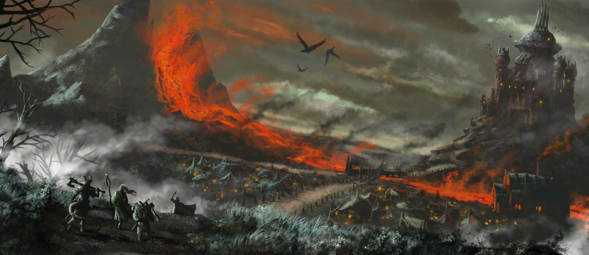
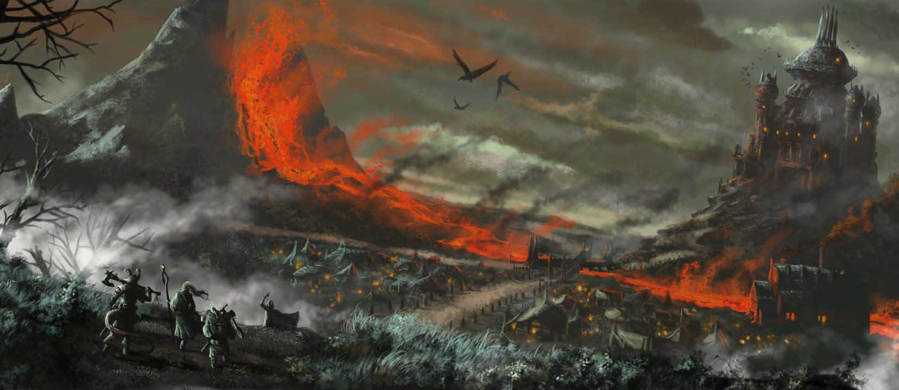
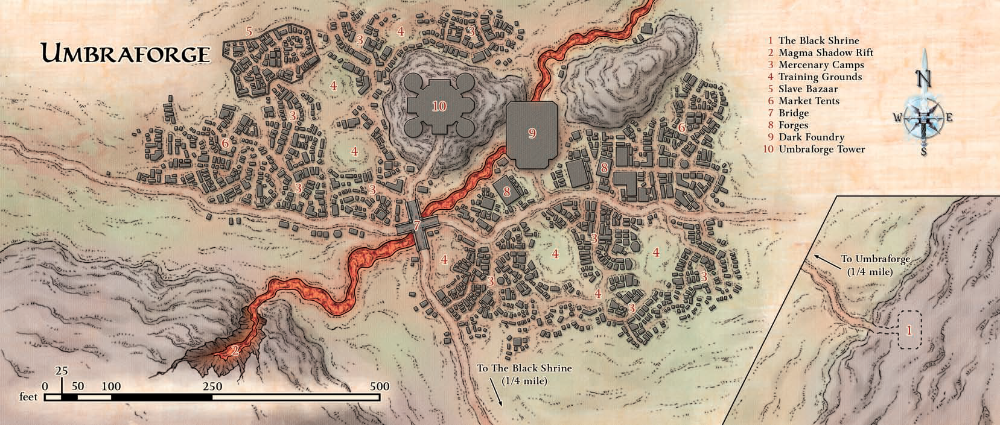
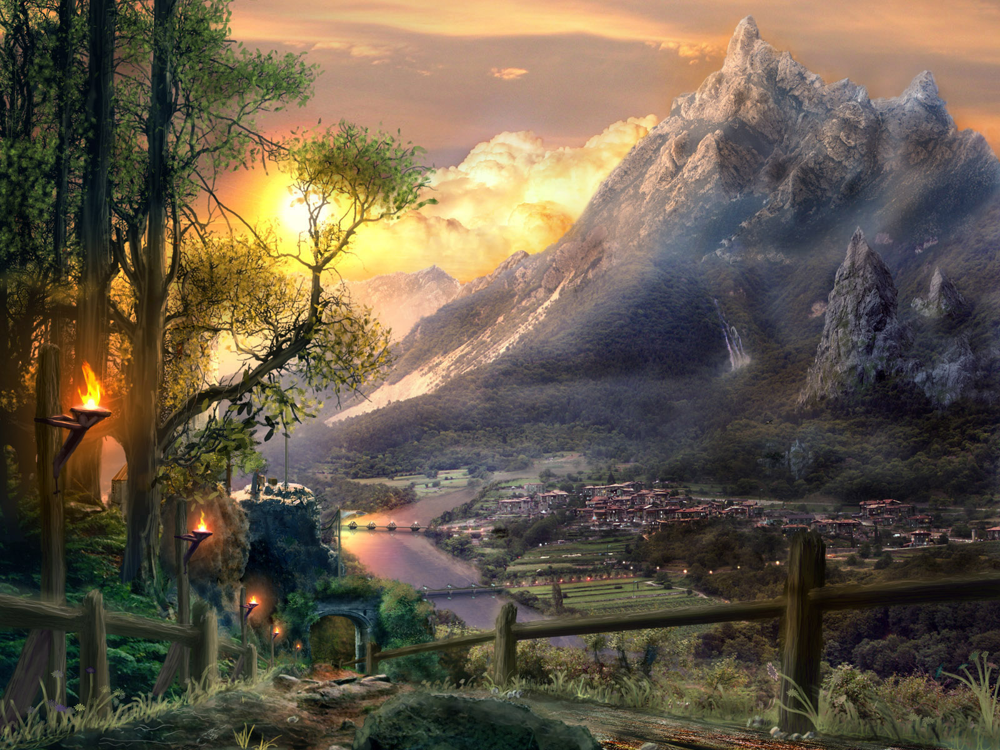

Introduction
50 years have passed since a small band of heroes known as the Dawn Wardens
broke the grasping claws of the Red Hand and saved the civilized settlements of the
Elsir Vale from conquest and ruin. Peace has reigned for a generation and the cities
of the vale have once again grown prosperous on renewed trade routes following the Dawn Way.
Growth has been steady, but some of the scars of the past have yet to fade.
Now war comes again to the idyllic vale, but the heroes of old have passed into memory and legend;
yet their legacy remains to answer the call to arms: Our new heroes are all the children, relatives, or students of
members of the Dawn Wardens. Having inherited the skill and wanderlust that afflicted their
forebears, they leave their homes in defense of the vale against the orcish hordes rumored to be approaching from the
savage plains beyond the western mountains. Though many of the simple folk spread throughout the vale dismiss the idea
of war raging anew, you know better, and interruptions in the trade along the Dawn Way have
caused the less stoic to begin voicing concern.

Seeking coin to pay for arms and armor on their way to the front, our heroes join the company of worried merchant caravans
headed west along the Dawn Way to Brindol, acting as guards. Passing
occasional farms and hamlets the caravan guard slowly grows, gradually accruing new recruits, many of whom they've met through
the fraternity of their formerly adventuring relatives or masters. In the days spent following the sun, former acquaintances
have coalesced into a group of fast friends, trading posts with others until you all travel together with the same caravan in
the employ of Axenhaft Security.
Talk passes along the road from traveler to traveler and news of an upcoming midsummer festival in Brindol
dominates the gossip. Supposedly the festival marks the anniversary of the Dawn Warden's defeat of the
Red Hand. Many say that the highlight of the annual festival is an urban footrace commemorating the grueling
marathon run by the heroes of that war to warn the people of Brindol of the impending attack. Entry is open
to all, the race draws a heavy crowd, and rumor has it the winner draws a heavy purse and possibly a prize of magic. Some hopeful
travelers boast of their intent to enter and win, despite worries of some underhanded tactics used by competitors in the past.
The excitement is catching and as a team our heroes plan to enter the race and divide the winnings among themselves.
Just as they shake on the arrangement the caravan turns a bend in the road around a lazy hillock and the jovial camaraderie is broken
by the sound of screams and drawn steel. After a short and brutal skirmish with a large group of well-armed goblins
Tusk's scouts armed by Modra with Sarshan's weapons,
the merchants in the caravan lay dead, leaving our heroes unemployed but with a wagon full of goods to finance the race entry.
The Race


Brindol was in the middle of celebrating the anniversary of the victory over the Red Hand of Doom.
The pinnacle of the celebration is the cross city race and the town is alive with talk about it.
The race is held every year on the same day.
The goal is to take a letter from the southern gate to the northern watchtower as quickly as possible.
While the race started out as a competition between two message carriers and a celebration of the city's history, it is now open to anyone.
There are loose rules about the use of magic and physical violence between competitors but it is, for the most part, a free-for-all with almost anything being considered "fair".
The race is also open to interference from the citizens.
Many bands of children, ruffians, and the bored delight in setting "traps" for the racers and watching them take a tumble.
The prize for this punishing race is coin and the added inducement of a magical item from the treasury.
The favored competitors were:
- Dorion Light-Step, an elven ranger from the nearby woodlands, venturing out in the world and seeking to make a name for himself
- Garth Cooper, a member of the local watch, young and arrogant and looking to win in order to bump himself up the ranks and to impress a girl he likes very much
- Two-Teeth, a brute named after the teeth he lost after being kicked by a wild horse, is a half-orc barbarian who is traveling through Brindol on his way to somewhere else.
The rules were simple:
- Participants in the race must be present two hours after first light at the southern gate.
- Participants must not begin running until the gate portcullis hits the ground.
- Participants may not directly attack another runner with magic or arms. Roughhousing, wrestling, and bare-hands brawling are permitted.
- Participants must travel on foot (or their species equivalent). Mounts, magical travel, flying more than a few feet at a time, and any other forms of movement that the judges
deem to be cheating will get the racer disqualified.
- The first one to hand their letter to the town elder at the top of the northern watchtower is the winner and will be awarded the prize. The elder's decision is final in the event of
an apparent tie.
The crowds cheered as the contestants lined up just inside the southern gate, sizing each other up.
With a great deal of gravitas, Kartenix, the captain of the watch passes before each contestant, bows, and presents them with a small scroll bound up with red ribbon -
the message to be delivered at the end of the race.
With this accomplished, he paces to the side of the starting line and raises a bright red handkerchief and waves it furiously like a flag to signal the guards.
After a moment there is a loud "CLANG!" right behind the runners as the portcullis drops. The race had begun!
The race ran across the rooves and streets of the magical, poor and wealthy quarters, through ship rigging and across barges on the river, and past crowds in the market and cart pileups on the bridge.
To win the race, one needs to clamber to the top of the northern watchtower and hand their letter to the town elder.
The tower is old and craggy and many of the bricks look loose.
Pigeons roost amongst the nooks and crannies and the stone is stained white with their droppings in many places, incongruous clumps of wild grasses and flowers sprouting from unlikely places amongst the brickwork.
In a tight race, Melvin was first to press the crumpled and illegible note into the town elder's hand and who raised his arm triumphantly, proclaiming him to be the winner and ringing the alarum bell that hangs in the tower.
As it peeled, a great cheer went up from the crowd and the town crier solemnly stepped forward to present Melvin's prize, a fine pair of boots that twinkled with the glow of magic and a small but weighty coffer of gold.
Rescue at Rivenroar

After the race, our heroes are celebrating in the Antler and Thistle tavern, flirting with their waitress Alys, when the gentle hubbub of the evening was shattered by the crack of the front door flying off its hinges
to land amid the nearest tables. Four hobgoblins rushed into the bar, swords outstretched to skewer the nearest bar patrons.
"For Sinruth! For the Hand!"
they cried.
A fight ensued and our heroes quickly dispatched the intruders, but the scuffle left several patrons dead and the tavern aflame.

Our heroes organized a bucket brigade to douse the flames, only to be interrupted by shouts in the distance. As they approach the shouts resolve into a throng of townsfolk running around the street corner to the north, fleeing a curious sight: a full-grown ogre pulling a wagon by a yoke around its waist. The ogre held a cask in one hand and a massive club in the other. Riding atop the wagon were two hobgoblins with bows. The ogre tossed casks of flaming pitch into other buildings in the neighborhood.
After a harrowing battle with the ogre where our heroes turned the explosive casks against the ogre a crowd gathered and more guards arrived a few minutes later. They immediately ask for the party's help defending the bridge, but by the time they reach the bridge, the invading band had already retreated.
The residents of Brindol spent the rest of the night putting out the fires that the goblins set, tended to the wounded, and kept a nervous watch from the ramparts.


The next morning, the full extent of the attack was known: the invaders looted the Hall of Great Valor and kidnapped several citizens, dragging them off into the hills. Among the kidnappees were:
- Jalissa, a pretty acolyte of Ioun and alchemist, but a woman without the spine for such trauma, making her hysterical.
- Sertanian, the castellan of the Hall of Great Valor and a former soldier during the Red Hand invasion. Then well into his eighties he was hard, weathering the event with dignity.
- Thurann, the 8-year-old of Kartenix the guard captain, was brave and observant, handling the event better than many of the adults and stealing food for Jalissa.
- Mirtala, a middle-aged cook with claustrophobia, went nearly catatonic while held in a crypt with dire rats.
- Zerriska, an herbalist and self-described "witch" in her seventies, managed to bluff her captors into giving her a wide berth.
- Adronsius, a dwarven alchemist with an attitude, he suffered severe, repeated beatings at the hands of his captors thanks to the racial enmity between dwarves.
- Kartenix, the captain of the Brindol city guard and father of Thuran, fought his captors and met an early death at the hands of the goblins' pet ettercaps.
Among the stolen treasures were:
- Ornate, gilded dragoncrest helm
- Ceremonial platinum longsword; too heavy and blunt to be useful as a weapon this is the sword from which Amyria later sprang
- Set of three shields with the Red Hand insignia, each with a charred hole near the center
- Set of iron gauntlets with extensive filigree
- Heraldic battle standard depicting two hands clasped in a handshake
However, the city guard had managed to capture one of the invaders alive: a hobgoblin named Morrik held in the city stocks, bruised, covered in rotten tomatoes but bandaged and alive.
With their local fame from the race and their proven valor against the invaders, the Brindol town council requested our heroes' assistance in rescuing its kidnapped citizens and recovering the stolen treasures.
After forcefully questioning Morrik our heroes learn that the leader of the goblins was a hobgoblin named Sinruth and he eventually wanted to raise an army and carve out a fiefdom of his own.
The goblins were using catacombs under the ruins of Castle Rivenroar as a base for now. Morrik and the other hobgoblins were ordered to take prisoners during the raid to give to the "undead horrors" that guard part of the goblins' lair.
Morrik draws a crude map of the mountain path that leads to Castle Rivenroar.
From her knowledge of history, Festivus surmises that Sinruth and the goblins see themselves as descendants of the Red Hand horde that menaced Brindol years ago, but it was also apparent to a student of history that they have no actual connection with the historic Red Hand.
They were flying the Red Hand insignia upside-down, for starters.
 

Following Morrik's map with Lechonero tracking the goblins, our heroes arrived at the ruins of Rivenroar Castle, a former tiefling stronghold from the ancient kindgom of Rhestilor.
Almost nothing remained above ground of the fortress, but our heroes descended into the open catacombs, facing goblins, gnome skulks, dire rats, ettercaps, and ancient traps.
Among the magical curiosities in the catacombs was a dim "picture" in the middle of a room showing flickering images of a sinister tower in the middle of a shadowy swamp
what our heroes would later discover to be a one-way portal to Umbraforge.
Our heroes liberated Thurann, Mirtala, Zerriska, and Adronsius, but were too late to save Kartenix.

Passing down to the lower levels, our heroes liberated Sertanian and Jalissa - who instantly attached herself to Richard D'Eversholt - and eventually confronted Sinruth himself.
After dispatching the hobgoblin, our heroes recovered the looted treasures from the Hall of Great Valor in a nearby crypt and a lightning whip and a suspicious note from Sinruth's person
indicating a patron later discovered to be Modra acting on Sarshan's behalf:

Brave Sinruth,
The Red Hand will rise again! The other remnants take great cheer in your recent attacks on commerce coming into The Blight That is Brindol.
We're particularly pleased with your ability to inspire a fighting spirit in others, whether they have true goblin blood or merely wish they did. To be blunt, we think you should have many more soldiers under your command. Many, many more.
And recent events have rendered some remnants leaderless. With a bold stroke on your part, the remnants would rally to the Red Hand you so proudly display.
As your bold stroke, do this: Attack the The Blight That is Brindol by night. Focus your efforts on their Hall of
Great Valor, for it mocks the many hard-won victories by the first Red Hand of Doom. Take from them the spoils
of war they shamelessly hang on their walls and bring those antiques back to Rivenroar.
Do this before the moon is next full. And with regard to your previous question, turning over captives to your
unliving allies at Rivenroar is perfectly acceptable. War sometimes makes strange bedfellows, and we appreciate
how you've united such disparate forces under your banner. Whatever prisoners you take from Rivenroar you can
give to the wight.
Fight with the valor of your ancestors, Sinruth. And keep your hands stained red with the blood of the weak!
I will visit you again next month, at a time of my choosing.
The Emissary
After our heroes returned the surviving hostages and the recovered treasures to Brindol, Richard D'Eversholt retired from the party to settle down with Jalissa and assist Sertanian
running the Hall of Great Valor and establishing a proper temple to his god Bahamut in the town. The rest of the party continued on to the city of Overlook in the west to join the
battle against the invading orc hordes.
The Siege of Bordrin's Watch
The lands west of the Stonehome Mountains have been a festering mire of want and suffering.
This parched and barren landscape is suited only for orcs, goblinoids, and other fell creatures.
From time to time, a warlord gathers a small army and tumbles
out of these badlands to test their strength and arms
against the stalwart dwarf defenders, but never have
they crossed the mountains because straddling its
single pass is an ancient dwarven stronghold named
Bordrin's Watch. No matter how many orcs muster,
they die upon its walls, painting the sturdy stone
with their black blood. So the rumors of a new host
in these forlorn bogs and dead woods seemed a small
threat - nothing the guardians could not handle. This
army, though, was different. Unlike all the many times
the orcs have emerged, they now had a leader who
could keep them together long enough to win.

The orc leader was an overlarge warrior and chieftain
named Tusk. Not a true orc, he had the blood of
ogres in his veins, which made him larger, tougher,
and eminently more dangerous. Having slaughtered
half a dozen orc chieftains, he drew together the
unruly tribes to mount an offensive against Bordrin's
Watch to lay claim to the soft lands beyond its walls.
Tusk knew the history of the Stonehome Mountains
well, knowing that unless he could find some way to
bypass the fortress in the mountains, it wouldn't matter
how many warriors he commanded since he would fail.
What Tusk needed was a way around the fortress.
Ever resourceful and with numerous contacts and
allies, Tusk turned to his occasional lover and advisor,
a shadar-kai witch named Myrissa. He sent her back
to the Shadowfell to recruit allies to help his cause,
and a short time later she returned with a small army
of dark ones, led by a mysterious and sinister dark
creeper, known as the Emissary - later our heroes discovered this to be Modra, a rogue lieutenant of Sarshan. This leader offered
to assist Tusk in exchange for an exclusive arrangement
in which they would supply Tusk's armies with
weaponry for whatever price the dark creeper and
his fellows asked, and in exchange, the dark creepers
would find a way through the mountains. Tusk readily
agreed and paid the exorbitant price, gaining a
fine arsenal, and also, he hoped, the key to victory.
Not long after, the dark creepers returned and
revealed a number of tunnels burrowed beneath the
mountain. They showed the chieftain the locations of
each, explaining how the passages connected one side
of the mountains to the other. No tunnel was large
enough to accommodate his entire army, so, Tusk
gave his horde their marching orders, sending them
to climb the mountain slopes, while his scouts moved
ahead to secure the tunnels and prepare the way for
Tusk and his elite warriors to strike the fortress from
below.
War approaches. A week ago, a call to arms sounded
throughout the Elsir Vale, summoning warriors to help
defend Bordrin's Watch in the Stonehome Mountains far to
the west. Word of an army of orcs on the march had spread
through the Vale for months, but now, it appeared the
rumors were true.
Our heroes, along with militia groups and other adventurers
from all over the Vale, marched west until they came to
the city of Overlook, a large fortified community raised
by dwarves centuries ago.

Once there, our heroes and two other adventuring parties (the Farstriders and the Freeriders)
were invited to Caer Overlook and the High Hall, there to attend the Council of Elders.
Standing on the 20-foot tall dais are the
five elders. Each of the three male dwarves have long
beards that hang to their feet, and two are old, being
gray and wrinkled. The third is younger, with black
hair and hard features. The two female elders are
both attractive, one with red hair and the other with
brown. All five wear the robes of their office - luxuriant
purple and silver damask. Arranged beneath
them, filling the chamber completely, is a motley
crowd of common soldiers, militia, and adventurers,
with each race and occupation represented, and most
standing in small groups, but a few mingling.
The youngest male elder spoke:
Welcome to High Hall friends. I am Elder Cadrick. I don't
much see the point in bandying words, so I'll lay it out for
you. War is upon us. A great host of orcs comes from the
west. Their intention is clear. They will come through the
mountains bent on slaughter. Those they spare can look
forward to a short life of slavery. Overlook, and Bordrin's
Watch in the mountains, have long held fast against these
raids, but our scouts say never has such an army gathered.
Thus, we turn to you brave souls to help defend not only
Overlook, but also all the Elsir Vale.
When the orcs arrive, we're certain they will come up
through the pass. We know this because already there have
been attacks from the tunnels below, compromising the
fastness. The defenders have fought back the savages, but
it's clear the rest are coming and fast.
So here's the plan. Durkik Forgeheart will lead the
militias and most of you to bolster Bordrin's Watch. Orc
trailblazers infest the tunnels below, so we've tasked their
security to the Farstriders. One more mission remains,
though. We need a group to evacuate the monastery on
the other side of the mountains. It's dangerous work, what
with the orcs and all, but priests need a warning of what's
coming if they don't know already.
Do we have any volunteers?


From Elder Cadrick our heroes learned the Bordrin's Watch had already been compromised -
advanced parties of orcs had uncovered the tunnels
beneath the mountains and were already coming through
to harass supply trains and reinforcements bound for the
fortress. The Council asked our heroes and the other groups to
descend into these tunnels, clear them out, and seal them
off before the main host of the enemy army arrived. For
their efforts, the Council promised to pay each group 1,000
gp upon their return. Our heroes headed to the old Monastery
of the Sundered Chain to the southwest, where they
could gain access to the tunnels below, while the Farstriders heads
for Bordrin's Watch to secure those passages, and the Freeriders
to the Vents.

At the Monastery of the Sundered Chain our heroes overcame a small contingent of Orog before descending into the depths below the upper temple.
Fighting past elite troops lead by the champion Og while Festivus surfed down a subterranean cliff face on her disc,
the party closed the tunnels the orcs were using and rescued the few remaining survivors hiding in the works
including the paladin Kalad. Kalad had already closed the tunnels under Bordrin's Watch when the orcs approached, but his unit was overwhelmed attempting
the same here. Despite his injuries Kalad insisted our heroes accompany him directly to the Vents to make sure the last tunnels are sealed, doubting the
Farstrider's success at the task:
There's too much at stake, friends! It's a labyrinth down there [at the Vents], easy to get turned
around. Would you risk the lives of everyone in that
valley on the efforts of just one group?
How can we forget the suffering of our kin during the Age of Chains? How can we
set aside those ancient grudges when the risk of slavery is now greater than ever?
Fellow warriors, the orcs are upon us, marching once more to the beat of the giants'
drum. It falls to us to stop them - to hold fast no matter their numbers. If we falter,
we give into fear. It's not just ourselves and our way of life that will suffer; all people
of the Elsir Vale will perish as well. War is upon us. Now is the time for men and
women of courage to stand up and defend those who cannot defend themselves.

Following Kalad, our heroes head to the Vents to back up the Farstriders. Scattered across the lower slopes are numerous steaming
fissures, some as small as tiny cracks in the stone with
others large enough to accommodate an ogre. The rocks
there are slippery and aside from ropes of brown-black
fungus, moss, and lichen, nothing lives here. The air stinks
of sulfur and grows stronger nearest the plumes of acrid
smoke wafting up from the holes.
About a hundred feet down from the lowest cracks was
a campsite. There, our heroes saw five horses tied up and empty
feedbags hanging from their heads.
Putting his tracking skills to work Lechonero found a smothered
campfire sat a few yards away from the horses and five different
sets of footprints leading into one of the larger openings with no sign of any prints coming out.
Karrion's keen sense of Dungeoneering led the party successfully through the warren of natural caverns
leading to the Vents proper. There the doors opened on a platform overlooking an enormous
chamber. A group of orcs turned to face our heroes, growling with
rage and drooling with anticipation for the kill. Behind and
below the orcs lay a sunken section of the chamber, where
iron tubes as tall as a man ran across the room.
Iranda - a dark creepr wearing a long black cloak - was
examining an iron wheel connected to the southern pipe.
On the north side of the pit several large beetles milled about,
their mottled hides glowing red as if aflame.
After dispatching the opposition, our heroes recovered an odd brass key from Iranda's body.
Searching the area, the ill foreshadowing from the campsite proved true as they discovered
the bodies of the Farstriders - partially eaten by the orc's pet cave troll.
Jen, the half-elf warlock of the Farstriders was killed by Iranda herself.
The Nexus of the Vents was a massive chamber in which
the ceiling rises 100 feet above the entrance. At the
center of the chamber was a pillar of solid
steel that was screwed into the stone and that
stood as tall as the ceiling. Two bronze and
steel pipes emerged from the eastern walls
and traveled toward the steel column before
vanishing into the stone. Rising around
the outside of the room was a stone catwalk
that connected to steel grating that wrapped
around the steel pillar like scaffolding.
Dark tunnels pocked the walls, leading to who
knows where. The faint odor of sulfur
permeated the room and the stone around the base of the
steel column was dark, as if damp.

As our heroes ascended the ramps around the outside of the room
waves of orcs began pouring from the tunnels to block their path.
Melvin charged ahead, sweeping orcs off the edge to their deaths,
but was brought up short as the leaders of the invasion -
Tusk and Myrissa themselves - emerged from the tunnels and Tusk
quickly left Melvin unconscious and bleeding out. Lechonero made a
daring swing across the room to rescue Melvin.
Trapped by a seemingly endless horde of orcs, our heroes activated the release
mechanism at the top of the Nexus, quickly flooding the chamber with a flood of
boiling water stored from the vapor of the Vents and effectively sealing the tunnels.
But the mechanism also locked the escape hatch at the top Nexus and our heroes had to race against time to
puzzle out the dwarven runes to unlock the hatch and escape before they boiled alive.
The Shadow Rift of Umbraforge
Previously our heroes discovered that
dark creepers had sold arms and tactical intelligence
to the orc war chief Tusk, aiding him in his attack
against the folk of the Stonehome Mountains.

Sarshan is an opportunistic shadar-kai arms
dealer. For years, he has built an invisible mercantile
empire around the sale and brokering of weapons,
armor, mercenaries, and intelligence from his domain
in the Shadowfell.

In the past Modra (a lieutenant of the blackmarket arms dealer Sarshan) was approached by Tusk's advisor Myrissa, a shadar-kai
witch who knew of Sarshan's operations. However,
the success of Sarshan's arms running and mercenary
services turned on his ability to maintain a low profile
in his dealings with clients in the world. Sometimes
this meant turning down jobs that run too much risk of
exposure. Tusk's massive raid, aimed at the heart of the
civilized frontier and a stone's throw from Sarshan's
operations in the city of Overlook, was one of these.
When Sarshan rebuffed Myrissa's request, Modra
approached the witch in secret. He struck a deal to
supply Tusk with weapons and intelligence, sending
in a group of his followers (the dark creepers in the Vents, including Iranda) to do the job.
In going behind Sarshan's back, Modra expected that
an overwhelming orc victory (won with the help of
dark one subterfuge) would win his master's respect.
However, with Tusk's forces routed and Modra's servants
scattered or killed, the dark creeper had to
go to ground to escape Sarshan's wrath.
Trapped in the natural world, Modra needed to reclaim Iranda's brass key - a key to a secret portal back to the Shadowfell.
As our heroes began investigating the purpose of the key back in Overlook, Modra heard word of their efforts and
hired the "Lost Ones" assassins to eliminate our heroes and retrieve the key.
Underestimating the party, they not only survive the assassins' attack but manage wrest Modra's name from the survivor.
Asking around about "Modra", our heroes learned the following:
-
"The threat of the orcs might be ended after the
siege of Bordrin's Watch, but word from the frontier
is there's more trouble on the march. Just like
Tusk's clan, the rabble of the mountains are getting
their hands on good-grade weapons and armor, and
they're looking to use it."
-
"You get all races in Overlook, but the dark ones that
pass through the city keep to themselves. More often
than not, those you do see are in the company of
Lost Ones bodyguards and enforcers."
-
"Someone by the name 'Modra' was said to be
buying information a few months back, looking for
those with experience mining the old caverns of the
Stonehome."
-
"Modra is a dark creeper, and well known in the
city's criminal underworld."
-
"It's said that the dark creeper Modra brokers weapons
and armor through the Overlook black markets."
-
"Modra met up with a shadar-kai witch a month ago.
Some said she was doing a deal for weapons, but she
didn't look much like a warrior."
-
"The far traders coming into Overlook talk of more
and more trouble on the roads. They say the Red
Hand of Doom was behind what happened in Brindol
a few months past, but there's more cults than
that on the rise across the frontier."
-
"The dark creeper is just the front man for arms
dealing in the city. No one knows who's behind the
operation, but rumor says it's bigger than anyone in
Overlook will ever know."
-
"Modra was in the city three weeks past, but he was
keeping a low profile. He had a squad of dark creepers
with him, must have figured they'd stand out."
-
"Last time anyone saw Modra was just before the
raid on Bordrin's Watch. I heard he's been on the run
since then. Some job that went bad."

Ensorcelled by a magical tankard she discovered in the
Monastery of the Sundered Chain Kallista disappears during the investigation.
But losing one member the party finds
another character making similar lines of inquiry
regarding the dark creeper Modra. The woman wore brown leather
beneath a green cloak, and a longbow is slung across her
chest. Quietly, she said
"I've heard word that there's a group
in the city looking for someone named Modra. I'm doing the
same, though I doubt it's for the same reasons. Perhaps we
should compare notes."
This was Reniss,
sister of the half-elf warlock Jen of the Farstriders. When Jen was
slain in the Vents, she used a sending
stone to whisper her last words to her sister, a name
the Farstriders tripped across before they were cut
down - "Modra...."
"I met a dark creeper close to death in the Clean Sheets,
looking like he'd been in the fight to end them all. He said
he'd been working for this Modra when it happened. For
a quart of bad beer, he told me that if I was looking for
Modra, I'd better be fast. Someone else is hunting him -
someone looking to kill him. The creeper didn't know where
Modra was, but he'd heard him talk about some Tradetown
almshouse called the Happy Beggar."
Our heroes follow Reniss' clues to Tradetown, and the Happy Beggar,
a single-story almshouse sandwiched between a warehouse
block and a section of rundown tenements. What
no one outside of a small number of dark one and
shadar-kai operatives knew at the time is that the almshouse
is owned by Sarshan, and it conceals the heart of his
arms-running enterprise within the city.

Prashant and his wife Ausma ran the Happy Beggar
on the proceeds of their former life as adventurers,
unaware of the real purpose of the building.
The atmosphere inside the Beggar was as dingy as the
whitewash on the outside walls. A plain common room
sits two dozen miserable-looking patrons, most asleep in
their chairs or sipping at cracked mugs. A few
double as volunteer staff, carrying steaming teapots from
table to table. Behind what would be a bar in any other
establishment, a dour-looking human woman in white
robes boils water at a wood stove. A similarly attired male
greets you as he limps up a flight of stairs across the room.
.png "Sarshan (in disguise)")
"Greetings and welcome. You are just in time for tea and
songs of devotion. Please, join us!"
Among the sorry lot taking refuge at the Beggar our heroes discover Kallista,
rescued by Prashant and Ausma from the gutter at the end of a near-terminal bender.
While investigating, our heroes talked to an old man alone in a rickety chair,
a hunched form in a tattered cloak. The old man appeared human or half-elf,
but his face was deeply scarred by the ravages of disease. He coughs wetly
into a grimy handkerchief and introduces himself as Brenat:
"I know the one you mean. A dark creeper, and none
as dark as him, or so I've heard. Time was, he used
the Happy Beggar as a meeting place, but I'd reckon
he hasn't been seen here in two years or more. I ran
him off one time myself. I might not look it, but I
fought dark creepers in the mountains as a younger
man, sellsword to a dozen lords. Much as yourselves,
I'd wager. Adventurers all have a price, eh?"
This man was actually Sarshan in disguise, in Overlook on business and hunting Modra.
When he deduced our heroes' intent, he figured he could have them take care of Modra
for him:
"Wherever you find this Modra, heed me. He's a black-hearted
one - make no mistake and strike no bargains with him. Kill
him quickly before he gets the chance to return the favor."
Sarshan was not aware that our heroes possessed Iranda's key, and to his surprise they
infiltrated his smuggling route in the basement of the Happy Beggar.
Desperate to escape Sarshan, Modra did the same a step ahead of the party and stole another key from
one of Sarshan's underlings to pass through the portal into the Shadowfell.
Hot on Modra's heels, the party used Iranda's key to
open the portal to Umbraforge, Sarshan's base of operations in the Shadowfell.
Modra left a trap on the portal that delayed the party's pursuit,
and they arrive alone on the outskirts of Umbraforge, Sarshan's
domain in the Shadowfell.

The land before our heroes was like nothing they'd ever seen before.
A wide plain of gray-green grass and stunted black trees
spread beneath a sky scoured by fast-moving clouds. The
sun was bright above but somehow didn't cut the darkness
that drapes every rock and every blade of grass in gray
gloom. It was the Shadowfell.
From the mouth of the cavern, a wide and well-traveled
road runs in a curving line to the north. There, perhaps a
quarter-mile away, a military camp spread. Buildings were
scattered here and there, with tents and pavilions spreading
between them. Torches and fires burned brightly against the
ever-present shadow, and lone trees and tall stands of graygreen
grass were whipped by a hissing wind.
Looming above it all, a rise of black rock to the west was
rent by a seething volcanic rift. Black-streaked lava coursed
from it to descend into a narrow channel, and a permanent
pall of glowing red-black smoke rose above it. Over this
molten flow, a great stone bridge arched. This wide eastwest
road met the road north from the cavern. North of
the bridge, a tall tower stood and a lower building spread
in its shadow.

The party approached the frontier of the mercenary camps
unchallenged, and a virtual city spread out before them.
Beneath patched canvas tents stood open-air taverns,
market stalls, apothecaries and herbalists, weaponsmiths
and armorers, butchers and greengrocers - all doing
roaring trade.
Training grounds opened up between the various camps,
and soldiers of different races clashed against each other with
sword and shield. In the quieter corners, they saw combat
casters training - the flare of arcane fire dancing between
them. But as they approached, they noticed with surprise that
these were not Shadowfell mercenaries for the most part.
Though shadar-kai and dark ones are well represented,
the fields and camps were packed with orcs and hobgoblins,
ogres and trolls, lizardfolk and kobolds and a dozen other
monstrous races of the world.
Searching the camps for Modra, our heroes come across the following information:
"This is Umbraforge, dominion of Sarshan, a
trader of great reputation and even greater
wealth. The tower, foundry, and forges are
his. The camps are those of the mercenaries
and slaves whose services he sells across the
Shadowfell and the world."
"Sarshan is shadar-kai, an outcast who made
a name for himself as the leader of a legendary
mercenary band known as the Black Arrow.
At their height, the Arrow put so much
fear in generals and kings alike that Sarshan
would take payment to fight for one group,
then take a bigger payment from their foe to
stand down."
"Modra is known well in Umbraforge, but for
all the wrong reasons now. He was one of
Sarshan's trusted lieutenants before he tried
to a broker a weapons deal that Sarshan had
already turned down."
"The job that Sarshan refused was some orc
king's raid on a dwarven citadel. Sarshan
never makes a sale if it has a chance of coming
back to him, and for good reason. This
job went bad, they say, and people know that
Modra sold the orc his weapons."
"Modra is long gone from Umbraforge and
the Shadowfell, believe me. Sarshan's got a
long arm and a longer memory. The creeper
would have to be crazy to come back here."
"The foundry is the new jewel of Sarshan's
operations. Its power comes from the fire and
shadow driving its furnaces. Sarshan's sages
create beasts of battle there, born killers with
magic in their blood."
"It used to be that Sarshan brokered mercenaries
mostly within the Shadowfell, but that's
changing. Dark ones and shadar-kai are still
his elite troops, but more and more, he brings
creatures from the world to Umbraforge for
training, then marches them off to places
unknown."
"The Shadowfell is only a stopping-off place for
Sarshan's mercenaries. A force of archons from
the Elemental Chaos was here not six months
ago. I saw githzerai from the Astral Sea in Umbraforge
once. I don't know what job they took
for Sarshan, but woe be to whoever got in their
way."
"Sarshan's slave bazaar is about more than just
servants and soldiers. His experiments in the
foundry only begin with dumb beasts. He's
building new soldier races there, born from the
slaves he traffics."
"Sarshan's mercenary operations have tripled
in size in months past, but it's not the Shadowfell
they're fighting in. When his forces are
bought and sent on the march, they're bound
for portals to the world. Shadar-kai, dark ones,
undead, giants, ogres, trolls, gnolls, orcs -
Sarshan has the armies of two planes on the
march. War is brewing in the world, but the
forces that will fight it are moving into position
in the Shadowfell, unseen."
Eventually our heroes were approached by the shadar-kai witch
Leena, a lieutenant of Sarshan's and a former friend of Modra's.
She wore a black cloak edged with
adamantine beads, and she kept her long hair plaited to
hang down her back. Gold piercings lined her ears and lower
lip, and a black starburst tattoo enclosed her right eye. She has the
following to say:
"Modra and I worked together for a time, but when he
elected to go behind Sarshan's back, I told him we were
done. I heard word of him in the camps even before you
started asking around. He has a plan to disrupt Sarshan's
operations by destroying the foundry, then the tower.
Sarshan has a private tunnel connecting the two, and
Modra is planning on venting the foundry's destructive
energy there. A mass of mercenaries is moving out tonight.
He'll be using that as cover when he goes inside.
"Modra's made his bargain with fate, and honor decrees
that he die for his betrayal. He won't get tears from me. But
if Sarshan captures him, he'll die slowly. If it's you, I'll hope
you make it quick."
Trailing Modra to the dark foundry, our heroes heard a claxon call of horns
sound out from the west. A haze of
red light glimmered against the clouds as the cascade of the
magma shadow rift flared. As Leena predicted, a huge force
of mercenaries was on the move, heading out along the east
road. The area around the foundry was deserted; the guards
at the tower and the bridge had turned eastward to watch
as Sarshan's forces moved out.

Inside the foundry the red glow of the lava trench was shrouded by shifting
clouds of shadow and steam. Huge stone vats with steel
doors lined both sides of this massive chamber, where
great arrangements of pipes and vents connected them.
Half the creatures inside the vats are humanoids mutated into horrible
warlike forms, their skin growing spiky armor plates,
their hands turned to razor-sharp claws, and so on.

Two squads of what looked like hobgoblins, their bodies
seemingly cloaked in shadow, worked there, supervised
by another cloaked figure. They worked busily at two
sections of pipe that diverted and channeled the lava flow.
Closer to the door, two other shadowgoblins stood guard.
Disguised as one of his minions, Modra spotted our heroes,
snarled as he sprinted for the closest vat,
pulling down on a great lever next to the door. He dodged
out of the way of a blast of steam. As the door opened, it
spilled a huge mass to the ground in a fountain of viscous
green fluid. Out of it rose an enormous two-headed boar,
bellowing as it clawed the ground.

His followers defeated and backed into a corner, Modra attempted to slip
into a secret passage but Lechonero shot him down before he could escape.
Driven to discover Sarshan's plans for the massive troop movements, our
heroes follow the secret passage into the tower.
Our heroes exited the secret passage into an apparently library within the tower.
Dim light filled the area from globes of gray glass set around
the room. Shelves of books and scrolls line the walls there,
and a large table covered with scrolls and bound volumes
dominated an adjoining chamber. A female shadar-kai
stood there, looking up in astonishment. Two shadar-kai
warriors, katars at their belts, scrambled away from the door
in surprise. A third warrior is digging through books on a
nearby shelf, his greatsword leaning against the wall a few
feet away.
After dispatching Sarshan's guards, the party explored deeper into the tower
and heard growling voices punctuated by yipping snarls beyond a door.
Inside were a pair of adjoining rooms that appeared to be well-appointed
guest chambers. Unfortunately, the occupants seemed
ill-suited to their comforts. Four gnolls emissaries from the Wicked Fang tribe
were there, and a reek of dog filled the air and the blankets on the beds had been pulled off
and piled in the corners.
The closest two snarled as they lunged at the party with spear and
claw, and the others fired their longbows as they took
cover behind a couch.

After slaying the gnolls and further exploring the tower, the party discovered two captives held prisoner in cells not much
less comfortably furnished than the guest rooms for the gnolls:
-
A young human who identified himself as Barases and claimed to be a traveler
in search of his lost brother Petraynus who wandered into Umbraforge as part of his investigation and was imprisoned by Sarshan for trespassing.
While some of his claims were true, Barases eventually revealed himself to be a Satyr in disguise, and
while Sarshan did imprison him during his search for Petraynus, he was actually kidnapped from the Feydark when he stumbled across
some of Sarshan's mercenaries.
-
A hulking Goliath by the name of Camulos.
Camulos' story was somewhat more direct: a mercenary who took work with Sarshan's armies, he
took objection to some of Sarshan's more amoral practices and was imprisoned for his interference. Freed from their
Freed from their cells the prisoners joined our heroes. While continuing their search of the tower, the party started to notice
tremors occasionally shaking the tower. While attempting to get high on the visage of the strange trees in the 2nd floor tower garden
Karrion discovered the psychic levitation lift passing up through the center of the tower. As the party floated upstairs,
dim light from globes of gray glass casts faint shadows
throughout the dark garden. Though the trees and other
foliage there appeared healthy and luxurious, the leaves,
stems, and flowers of the plants were sickly shades of dark
blue, gray, and black. Along the south wall of the chamber
stood a stone arch identical to the teleportation portals
the party used to reach Umbraforge. As Festivus attempted
to inspect the portal - finding it locked - a hissing sound
preceded a cloud of insects suddenly boiling
up from the shadows, swarming to attack. At the same
time, what appeared to be a mass of mottled leaves rose
up to reveal itself as an enormous beetle with viscous
black fluid dripping from its joints as it lurches toward them.

The party dispatched the swarm of insects and Lechonero, Barases, and Karrion put their animal handling skills to the test and tamed the
Shadow Beetle. Lechonero kept the beetle as a pet and named him Ringo.
Taking the lift to the top of the tower, our heroes surprised a squad of Sarshan's personal guard at practice which raised a general alarm.
Waves of shadar-kai guards streamed in from the main hall below and our heroes, nearly overwhelmed, were forced to retreat to a dead end at the top of the tower -
Sarshan's personal quarters. Festivus bought the party some time by dismissing her floating disc - covered in hundreds of pounds of looted, sharp weapons - at the
top of the tower shaft, burying a group of guard ascending the lift. In their few spare moments the group frantically searchesd the room for escape or ideas.
Escape was not fortcoming, but they did discover some of Sarshan's notes among his possessions. Chief among these notes were obscure references to a
place of lost riches - obscure references to the Karak Mines that ultimately help Bram Ironfell determine the location of the lost mines.
Eventually the shadar-kai were too numerous to resist, led by their grizzled captain Thannu, who had ritual scars standing out on his cheeks.
Two umbral panthers moved at his side with teeth bared as they hissed. Despite the overwhelming numbers, our heroes were dug in hard at the top of the tower,
leading Thannu to yell:
"Stand down! Or your lives are forfeit!"
Suddenly, the garden was illuminated by a pulse of white
light. The archway to the south flared as it revealed the black
shrine under the Happy Beggar, and a familiar figure stepped from that chamber to
this. It was the veteran our heroes spoke to in the Happy Beggar, but
he was no longer stooped with the appearance of age and his
scarred skin turned gray before their eyes.
The guards around the party saluted the shadar-kai, who
didn't hide his surprise at seeing them. He took in the
scene before him with a cold eye.
"I am Sarshan. I assume
someone has an explanation for this?"
Thannu delivered a quick, military-style report to Sarshan concerning the party's incursion into the tower, along with the number of dead and wounded.
Even as the captain finished, a warrior entered at a run,
calling to his master. As he approached to whisper in
Sarshan's ear, the shadar-kai turned to the party with a look of
wonder.
"You are, quite literally, the last people I ever expected to
see here. The charges leveled by my captain warrant torture
and death. However, I am told that an episode of sabotage
in my foundry appears to have been thwarted, and that the
traitorous Modra has been executed by persons unknown.
What might you know of this?"
After taking credit for dispatching Modra, Sarshan nodded thoughtfully.
"As far as you've managed to infiltrate my operations, I can
only assume you know a little of who I am. My wealth and
reputation turn largely on honor, obligation, and secrecy.
When I spoke to you of Modra, I hoped you would kill him
and save me the risk of more exposure than he had already
caused. The fact that you journeyed here to do the job is
a surprise, but for your part in ending his threat to me
and whatever he meant to do in the foundry, I am in your
debt. However, for your role in the death of my personal
guards, you are more greatly in mine. Here is a bargain that
balances the obligation for all of us. Join me...
We are mercenaries, all
of us, but only a precious
few have honesty enough
to admit it. Whether we
sell ourselves for coin,
for honor, or ideals, we
all have a price whose
continued payment
leads us inevitably to our
end. But when that end
comes, will you admit
to your balance sheet?
Or will you lie when you
claim that the blood on
your hands was spilled
for just cause, not simply
your hunger for glory?
Your skill at arms is clearly first rate. I offer you a place
to use and advance that skill. Moreover, I offer you a place
where you might live long enough to enjoy the fruits of your
bravery. In a month, or six, or a year, your world will be a
place you will not want to live. Join me here instead...
Though I am nicely positioned to take advantage of these
things, I know relatively little yet. What I do know, I cannot
share for professional reasons, but trust me when I say that
you do not want to know. Name your choice, friends."
With few options, our heroes reluctantly accepted Sarshan's offer.
At that moment they felt a familiar shaking beneath their feet as another
tremor rose and fell quickly.
Then suddenly, an ear-splitting explosion shook
the tower. Near the eastern side of the chamber, one of
Sarshan's guards shouted out:
"My lord! The foundry is in flames!"
The guards sprang into motion, Sarshan all but
ignoring our heroes as he barked orders. One group was sent to the
foundry, and another received orders to keep the mercenary
camps under control. Sarshan took a last squad of
chainfighters with him as he moved for the lift. Thannu and
his panthers were the only ones left with the party.
Bitterness at the men under his command dead at our heroes hands
he confronted them before attacking:
"If I was as cruel as my reputation implies, I would
send you back to watch your world die. Be
thankful that I am merciful."
Drained by their earlier battles, our heroes barely survived the encounter with Thannu.
From the south windows, Camulos describes the chaos in the
camps as mercenary bands try to pull back from the
destruction. The pens of the slave bazaar were
broken open, and the slaves had overthrown their
masters and started fleeing to the north.
Peering out the eastern windows Lechonero warned that
the foundry was being consumed by ongoing explosions
of shadow and flame. Thanks to Modra's sabotage the foundry's systems have failed, releasing the
arcane energy that fuels Sarshan's dark experiments and threatening to destroy the tower.
Unable to escape through the heavily guarded front doors, Festivus frantically raced against
time to unlock Sarshan's private portal in the tower gardens. Just before the foundry explosions
consumed the tower and collapsed the portal, she managed to open the way and our heroes tumbled through back to the world and Overlook.
The noise of the explosion was heard in the Happy
Beggar, with Prashant and Ausma discovering the
secret cellar and the route the party took into the caverns
below. They arrived just as the our heroes are cleaning
up and were astounded to discover what lies beneath
their establishment.
The paladins took care of contacting the Overlook
authorities. While they waited for the city guard to
arrive, our heroes confirmed that the Shadowfell gate
has been permanently destroyed. Sarshan's route
into Overlook had been shut down for good.
With their religious background, Ausma and
Prashant recognized the area as a place
of ancient demon worship. They concluded that the
dark power that created the specters had festered
within both sides of the Shadowfell archway all this
time - a potentially grave danger to Overlook that our
heroes had eliminated. The teleportation portal was still
operational, but it could be shut down by representatives
of the Council.
The discovery and destruction of the Shadowfell
gate makes the party heroes in Overlook, especially
when Sarshan's connection to the recent orc raid
was revealed. The shadar-kai's warehouses were
raided, but in the aftermath of Modra's treachery,
Sarshan had been careful to clean up any evidence
of his recent activities. Though his operations are
shut down for good, no further information on the
shadar-kai's presence in Overlook could be found.
The Lost Mines of Karak
Previously our heroes thwarted the dark creeper Modra and hamstrung his boss Sarshan's blackmarket arms and mercenary business in Overlook. Sarshan spoke vaguely of a
looming threat to the world and possibly Overlook in particular and our heroes turned over what evidence and information they had gathered from their journey to Sarshan's
lair in the Shadowfell.
As a result of saving the city not once but twice, the
party have become well known in Overlook. This
notoriety saw them approached by Kalad, the dwarf
paladin they rescued from the Monastery of the Sundered Chain. In
the aftermath of the thwarted orc raid, Kalad has taken
up a position as a sergeant in the Overlook watch. It
is official business that brought him to our heroes that day, where
he asked them to meet with a member of the Elsir Consortium.
Later that day, Kalad escorted them
to a private room in an upscale Elftown tavern. There,
he introduced them to a well-dressed dwarf wearing
the rich robes of a successful merchant, his golden
beard braided with silver bands.

"Greetings, Heroes of Overlook. I am Bram Ironfell of the
Clan Ironfell and representative of the Elsir Consortium.
Your reputations precede you, and for your actions, you
have my personal thanks in addition to that of the city. I
have a tale I wish to share with you, over dinner and drinks
of course.
The city of Overlook stands at the base of the Stonehome
Mountains at the farthest western reaches of
the Elsir Vale. This age-old redoubt was the center of
the ancient dwarf-kingdom that once dominated the
vale, but which faded into obscurity generations ago.
Though little is remembered of this lost kingdom,
its folk ventured far and wide in their day. One dwarf
clan - the Ironfell - made forays in search of mineral
wealth in the deserts beyond the Thornwaste to the
southwest of Elsir Vale. There, they established a
mine they called the Karak Lode, after the first dwarf
of Clan Ironfell to fall in its defense.
Over long years, Karak became a legendary source
of wealth as its folk pulled rich deposits of gold, silver,
and other precious metals from beneath the desert
sands. A supply depot was established at the desert's
edge to service the caravans traveling between the
mine and Elsir Vale, but the location of the Karak
Lode was kept a closely guarded secret. Only oathsworn
members of Clan Ironfell ever made the final
leg of the journey across the sands.
Dwarves hold their secrets close, and their grip
is doubly tight where wealth is concerned. So it was
that Karak's secrecy eventually became its downfall.
Under the pressure of monstrous marauders, famine,
and migrant human tribes, the dwarf kingdom of
Elsir Vale declined. As its resources were taxed past
the breaking point, the kingdom's borders began to
contract until little more than the territory immediately
surrounding Overlook was left. In time,
sandstorms struck the southern wastes and the Karak
supply depot was abandoned. Soon, all contact with
the mine was lost, and the Karak Lode was consigned
to history.
The location of the Karak Lode was known to few even
within the clan, and it was thought that all who had such
knowledge were lost when the mines were reclaimed by
the desert. Even within the clan, Karak is all but forgotten.
However, recent events might change that.
The destruction of Sarshan's operations in Overlook
saw the shadar-kai's many warehouses and transit
points raided. In one of those raids, the watch uncovered
documents connected to Sarshan's operations, including
an ancient fragment of parchment I understand we have you to thank for. On it was written a
list of landmarks and bearings for a journey, along with
the name of Clan Ironfell. I had never seen this parchment
before. However, at the watch's request, I undertook a bit
of research into my family's archives. If what I discovered
there holds true, this parchment holds the directions to the
Karak Lode.
Discovering what became of my kin would end a sad
chapter in Ironfell history, but that is not my primary
motive in seeking your aid. If the Karak Lode can be found,
its wealth offers the means to shore up the defenses of
Overlook and the Elsir Vale. However, it is anyone's guess
what manner of creatures might lair there, or what defenses
the last of the clan left to guard the mines. This is not a job
for the city watch, I fear.
This is a mission for
heroes who have shown
their mettle in the
defense of others.
If the evidence you have
uncovered is true, the
Siege of Bordrin's Watch
was but the first sortie
in a larger campaign,
against which Overlook
and Elsir Vale cannot
stand for long. I will tell
you of the Karak Lode,
and of lost wealth with
which we might defend
our land against the war
that is coming."
Bram offered the pary 1,000 gp (half in gold, half in
gems) as an upfront payment for undertaking the
search for the Karak Lode. In addition, the party could
claim any other treasure they recovered along the way.
Following the directions to the Karak Lode, the
party first headed south across the Thornwaste that
stretches between Elsir Vale and the Stonehome
Mountains.
South of the Westdeep, the broken ground of the Thornwaste
stretches before them. Ridges of knife-edged stone spread as
far as the eye can see, interspersed with heavy growths of
twisted brambles. Their first investigation of them reveal that
their thorns are iron-sharp, capable of drawing blood even
through the thickest clothing. No trail or tracks lead into the
wasteland ahead.

Deep in the Thornwaste a crossbow appeared over the crest of a large outcropping just beyond a ravine
ahead, trained on the group. A
scuffling to the east revealed another dwarf bolter rising
from behind a hedge of screening brambles.
Suddenly a gang of dwarves from Clan Hammerfist - a rival to Clan Ironfell -
attacked the party. They fell before our heroes' might but did manage to
disorient the party.
Lost in the Thornwaste, our heroes spied a human male in a tattered black coat
and leggings slipping through the brush and brambles. A battered, wide-brimmed hat shrouded his face,
his boots held together with coarse twine. He carried a spear
in one hand, a leather-bound book in the other.
This was the ranger Mag Blackthorn, and Lechonero nearly shot him with one of his infamous "warning shots."
After demanding a duel to satisfy his honor, Mag graciously escorted the party to the settlement of Dunesend
as the only civilization near our heroes' route.
After a four-day journey our heroes arrived at the village of Dunesend which marks the frontier of two
equally desolate lands. To the north lies the forbidding
Thornwaste, across which only the most experienced -
or most desperate - explorers tread. To the south,
endless desert dunes march to the far horizon.
Dunesend was built on the ruins of the dwarven
supply depot that once served Clan Ironfell's hidden
mining operations in the desert. All that remains of
the original dwarven enclave are scattered foundations
and a single watchtower. However, the dwarves'
carefully constructed system of spring-fed wells and
cisterns still functions, allowing those who dwell here
to farm the scrubland and eke out an existence in the
harsh landscape.
In years past, trade caravans made Dunesend a
waypoint along an east-west road that ran along the
ancient, pre-dwarven, basalt block wall carved in the
form of a serpentine creature with a crest running down its back.
Today, the road
is sand and the caravans have all but vanished. The
handful of families remaining in Dunesend do so
because they have nowhere else to go.

As our heroes approach the edge of the village a rustling in the thorny bracken revealed the
presence of a creature ahead. Lechonero caught a glimpse of a bearded face, its forehead
marked with goat's horns. It snarled as it turned and raced
away to the south, quickly disappearing within the briars.
They crested a low rise to see the expanse of thorns suddenly
end, a great sea of sand beyond it. At the transition from the
Thornwaste to the desert, a decrepit village sprawled, its huts
and fields spreading to either side of an ancient stone tower.
A sudden cry of pain drifted toward the party on the wind.
In the center of the settlement, sun-darkened human villagers
observed in angry silence as a massive gnoll raised a bloodflecked
flail over its head. At its feet, a human male lay dead.
Behind the gnoll coiled a serpentine creature with glittering blue
scales and dozens of legs. It watched the villagers hungrily.
Our heroes rushed to the aid of the villages, dispatching the demonic gnoll and his pet behir.
As the patrolling satyrs came to the aid of the gnoll, the party's newcomer Barases revealed
himself as a satyr to negotiate. After a tense standoff where most of the party briefly turned
against Barases, he managed to diffuse the situation and convince the satyrs to stand down.
The satyrs informed our heroes:
"That creature was the Warden, like us, he served
Shephatiah, Queen of the Drylands. The blue worm was his steed
and enforcer.
The Warden was here to make his monthly collection
of tribute."
Barases offered to pay the tribute in the villager's stead and compensate Shephatiah for the loss
of her servant the Warden. Barases asked permission to pay homage to the queen in person and the satyrs
said they would ask her leave and return with the answer in a few days.
The villagers were noticeably cool toward our heroes, and when Lechonero maked one faux paux too many the
group exiled him from Dunesend while they tried to talk to the townsfolk. On his own, Lechonero stumbled upon
the ruins of the ancient dwarven cistern the village was built on - providing an explanation for the giant
shield wall separating the tiny hamlet from the vast desert.
Finally an elderly villager named Darkus Comahni moved to claim the
body left by the Warden and in his grief consented to talk with our heroes:
"The queen's wrath will surely come down on us. Where will you outsiders be then, I wonder?...
The Warden was a foul tyrant that serves
the Queen of the Drylands. The blue worm has slain several among us in recent
months. The others were creatures of the Thornwaste in
league with the Warden. They are the ones that prevent us
from fleeing this place or seeking aid for our plight.
Poor weather has delayed our crops, but the Warden
accused us of holding out. He used poor Vaudnim to set an
example for us all...
The Warden first appeared from the desert a year ago,
stating that Queen Shephatiah had come to reclaim her
ancient throne. The name meant nothing to us, but the
Warden slew several of our strongest when we stood against
him. Now he orders us to pay tribute in goods and food or
his blue worm will devour us.
The satyrs live within the Thornwaste along the desert
frontier. Like the shifter brigands of the desert, they have
eagerly pledged themselves to the Warden's service. The
Warden comes always from the desert to the south. Where
his queen is, we do not know, but he and his followers
carry no more than a few days' water to get here. A few
of our folk tried to follow the Warden's trail when he first
appeared, but they never returned. All I can tell you is that
the Warden came once with a shifter who spoke out loud
of returning to somewhere called Karak. This creature was
soundly beaten by the Warden for his slip."
With the mention of Karak, our heroes decide to follow the satyrs directly
rather than wait for their return. Setting out from Dunesend, the group made their way
into the desert. Though the arid sands are inhospitable,
their hard-packed dunes made for easier going
than the Thornwaste.
As they traveled, the intermittent desert landmarks they
passed were a perfect match for the course set out by Bram Ironfell's
directions. They were a scattered series of basalt pillars, the
remnants of long-ago volcanic eruptions rising now like
sentinels from the sand.

On the second day of travel, a figure emerged from a haze of wind-blown
sand. The emaciated form of an elderly human female
crawled toward our heroes on hands and knees, her face lined and
sunburned beneath the hood of a ragged cloak. Her voice
raised against the wind, she called out:
"Turn back! Nothing
but death awaits you in the heart of the desert!"
Before they reached the woman to assist, our heroes spotted a cloaked form lying on the ground a short distance
behind the old woman, all but invisible beneath a thin layer of sand. With their ambush foiled,
several bestial humanoids rose suddenly from the ground, the
layer of sand that concealed them streaming down their mottled
brown cloaks. They wielded razor-sharp short swords, snarling
as they attacked.
At the same time the old woman's form shimmered like heat haze. In her place
stood a wizened hag, pointed teeth bared in a hideous
smile as she laughed.


The day after defeating the patrol sent out by Queen Shephatiah, early that morning, the course they had been following
became a rocky track leading toward another basalt bluff
in the distance. However, as the track curved around to its
south side, they saw two guard towers of hewn stone set into
the face of the bluff. The narrow gouges of arrow
slits flanked a narrow track leading directly into the rock.
Though worn by long years of sand and wind, the towers
were clearly of dwarven construction, standing as strong as
the day they were built.
The fortress guarding the Karak Lode consists of two
levels within the basalt bluff, plus a lower level that
hides the secret entrance to the mines.
The basalt bluff is 50 feet high, and from its top,
there is a view of the desert for several miles in every
direction. Fireplaces and braziers within the complex
are vented to chimneys that route through narrow
cracks and crevices, formerly making entry from above impossible
while the fortress is inhabited. However, in the long years since the mine was
lost, a collapse on the bluff above had created an
entrance into the courtyard.
The darkened entry corridor extended inward between rows
of arrow slits. At the far end, a massive stone gate banded
with iron stood closed. Halfway along the corridor, a
rusty portcullis blocked further movement. The sand that
had drifted in to cover the corridor floor was well marked by
recent footprints and signs of heavy objects being dragged.
Dark figures loomed on the other side of the closest
arrow slits, silently watching our heroes and giving off a foul odor.
On closer inspection, the unmoving figures were crudely
made straw dummies, old dwarven helms on their heads and
ancient polearms lashed to them with rope. Sneaking past the dummies
our heroes stumbled upon the troglodyte guards that had set up the stand-ins while they relaxed.
Having finished off the troglodytes, our heroes also dispatched several
off-duty shifter guards, one lounging around the dungeon stairs, some in their bunks -
and one Karrion shot on the shitter.
From there our heroes explored the abandoned upper floors of the fortress, before descending
the rear stairs into the Great Hall. The heavy scent of decay was sharp there and the hall
was filled with Sussur trees - strange trees of the Feydark with
silver-gray bark and gnarled branches that rose almost to the
ceiling, their thick roots punching down into the stone of the
floor.
Atop a 2 foot high dais to the north, the eladrin Queen Shephatiah sat upon
an ornate marble throne carved with bas-reliefs of dwarf miners at work.
Five human brigands and a shifter warrior stood arrayed about her.
The decomposing corpse of a villager from Dunesend lay at the queen's feet.
Barases, knowledgeable about fey glamours and nobility, saw through
the illusion upon "Shephatiah" and guessed her to be a dark dryad in a
magical disguise rather than a true eladrin noble.
As if a veil had been lifted, he saw through the corporeal
disguise of the eladrin queen, revealing the foul humanoid
plant creature beneath, her feet turning to roots digging deep into the body of the villager.
Exposed, the imposter and her guards immediately attacked, joined by giant Cacklefiend Hyenas
from the next room.
Having defeated the false queen and her minions, our heroes exited through the courtyard.
The ceiling of this huge pillared chamber had collapsed, a
great pile of sand collecting near the east wall. Three sets of
doors exit this area, arrow slits lining the walls high above.
Suddenly a massive carrion crawler erupted from the pile of sand
and a flight of harpies descended from the hole in the ceiling.
A desperate struggle ensued as our heroes tried to shut the doors on the carrion crawler while it
paralyzed them and the harpies magically charmed them to walk into the crawler's
maws. Half the group retreated to the upper levels to fire arrows down into the courtyard through
the arrow slits while Melvin kept leaping off the pillars to pluck the harpies out of the air.
Having cleared the fortress, our heroes proceeded to the lower level. Bypassing an animated steel
cobra guardian and dispatching a lesser berbalang haunting the Ironfell crypts, our heroes discover the dungeons.
The ancient dungeon showed signs of recent use, with scuff
marks along the floor indicating traffic in both directions.
Four large cells stood in the center of the chamber, the
entrance of each blocked by a lowered portcullis controlled
by a nearby winch and pulley. From the darkness
came a bright chirping sound.
The southwest cell was occupied by an aged human
male, his lined face sporting a snow-white beard to
match his fringe of hair. He wore the garb of a simple
desert peasant, and appeared to have not been there
long. Seven yellow canaries perched on his shoulders
and hopped around his cell. The Birdman whistled and
chirped at his tiny charges. When spoken to, he simply nodded
and smiled.
The prisoner offered no resistance and allowed himself
to be led upstairs where our heroes secured a room to rest for the night.
He accepted food and water, smiling when spoken to but otherwise ignoring
the party as they went to sleep.
Several hours later our heroes were awakened by the rattling of a portcullis
being raised, only to find the bird man gone. Searching the
fortress they discover that the path they followed to the fortress around the bluff was gone, swallowed
by a raging sandstorm. They are forced to take shelter in the empty fortress, but before retreating Lechonero noticed
something on the sand-strewn floor past the portcullis:
Humanoid tracks had been laid down by bare feet, a telltale
yellow feather trodden beneath them. The Birdman appeared
to have left the fortress, setting out into the deadly storm.
Just as our heroes were about to go back to sleep, the silence was shattered by a frantic chirping. The
Birdman's canaries were nowhere to be seen, yet their shrill
warning echoed from the stones.
Thanks to the warning, our heroes spotted sudden movement at the arrow slits along the south
wall. Three gray-skinned creatures with long, spindly arms
were squeezing through the narrow gaps and a hulking troglodyte with a skull mask and staff bursts through
the east door, another gray-skinned choker behind him.
After defeating the would-be ambushers our heroes immediately sought out where they came from. They assumed
the fortress was completely cleared and the with storm preventing anyone from arriving from outside they reasoned
the attack must have come from inside the fortress. A thorough search of the fortress led our heroes back to the
dungeons. The solid floor of the southeast cell newly contained a perfectly
round hole at the head of a smooth-walled shaft leading
straight down. Below the floor, an aging pulley system
descended into darkness. The pulley raised and lowered an
8-foot-wide wooden lift platform that sat then a few feet
below the hole. The battered platform was emblazoned with
the faded crest of Clan Ironfell.
Using the lift our heroes enter the Karak Mines proper and dispatch more troglodyte guards.
Once inside actual mineshafts they see that within the damp gray stone of the cavern walls, a faint
light pulsed. On close examination, they saw veins of dark red
twisting through the stone of the walls and ceiling, glowing
with a dull light. Drawing on her Dungeoneering knowledge Karrion identified that this phenomenon
wasn't a known Underdark substance and Kitara used her arcane knowledge to identify it as raw elemental
energy that had somehow leached into the natural world.
Recent tracks along the main passageway led our heroes on.
The central caverns they passed through showed signs of recent
mining activity, though on a much smaller scale than the
dwarves' operations of old.
While following the tracks, a vast gallery opened up where the dwarves of Ironfell
once worked, their long-rotted bodies now scattered across the cavern.
The rickety remains of ancient ladders and carts
were spread across the cavern. One prominent vein of the
strange, red-glowing stone crossed the chamber's floor and
climbed its walls, its cold light pulsing brightly.
Here and there, dwarf skeletons were strewn across the rocky
ground, rusted weapons lying nearby. The dwarves of Karak
appeared to have slain each other in the end. Oddly, however,
many of the skeletons appeared to be missing their skulls.
A small horde of enemies prowled the cavern - a barlgura,
several Bloodweb Spider swarms, a Chillborn Zombie, and two more Carrion Crawlers.
Using her invisibility, Kitara snuck into the cavern and repetitively
drew off individuals to be slaughtered by the party waiting in side passages.
The final cavern in the mines was circular, showing signs of excavation on
its far side. However, the way ahead was blocked by a wide
crevice that pulsed with a lurid red glow - a rift to the Elemental Chaos. In the shadow of
that light stood two red-skinned demons, slashing the air
with three-clawed hands. Behind them were piled hundreds
of dwarven skulls, a gruesome bier on which coiled a
serpentine creature with a humanlike face: the real Queen Shephatiah - a Guardian Naga.
After a bitter battle with Shephatiah, her Mezzodemon guards, and a fire elemental
summoned through the rift our heroes emerged triumphant.
Searching the chamber revealed
a set of scrolls holding parchment correspondence
written and transported by the naga's mezzodemon
lieutenants. The missives were in Deep Speech,
and detail how Shephatiah discovered
the portal leading to the Karak Lode on a sojourn
within the Elemental Chaos. They also made reference
to the reopening of the mines being financed by
a group that the scrolls did not name. These unknown
masters had claimed the wealth of the Karak Lode for
themselves, and were having that wealth shipped to them
by way of the elemental rift. While the parchments
indicated that this group intended to ramp up production
in the mines in response to an increasing need for ore,
the cryptic notes indicated that Shephatiah herself did
not know the identity of those she worked for.
After a long trek back to Overlook, our heroes relayed
their findings to Bram Ironfell. The dwarf was disheartened
by the news, and he told them that he would
leave the mines closed in order to prevent others from
suffering the fate of his clanfolk who perished there.
Festivus entered into a torrid affair with Bram Ironfell following
our heroes' return to Overlook, but it was only a few months before
the business of the Elsir Consortium called Bram away from the city.
Festivus has had no word from Bram in the months since.
Den of the Destroyer
While recuperating from their trip to the Karak Mines,
The day was dreary, the sky threatening rain. Suddenly a voice
called out, and they turned to see a familiar face: Kalad
from the Siege of Bordrin's Watch.
"Word on the street is that someone's looking for you. A
messenger from Brindol. She was in the market, asking
everyone in earshot if they knew you. She said her name
was Alys, sounded desperate."
When they went looking for Alys, they found that she had gone missing:
"Alys you say? That girl from Brindol, said she was looking for
them that put down the orc raid? She passed this way an hour ago,
but I saw her go off with some of them Lost Ones. They seemed a
little too happy to see her, if you know what I mean."
The underworld guild the Lost Ones had kidnapped Alys. Assuming her to
be a compatriot of our heroes they intended to pump her for information to
help the Lost Ones bring them down in revenge for their prior defeats
and to collect a bounty set on our heroes' heads by Sarshan.
While tracking the Lost Ones back to their lair in an abandoned temple of Pelor in Nine Bells,
our heroes came across a heavily armed elf sitting casually on
the slanted eaves above the door of a nearby building. The
elf wore a patch across one eye, appraising our heroes carefully
with the other.
"I'd be careful if I were you. The Lost Ones aren't going to be gentle
when you find them. They've got reason enough to kill you,
even if you didn't have a bounty on your head. The name is Gilgathorn,
Thorn to my friends.
I'm a mercenary by trade."
After flirting with Kitara,
Gilgathorn confirmed that the Lost Ones were behind Alys' kidnapping,
that they sought revenge on our heroes, and that an unknown individual
had set a 1,000 gp bounty on our heroes' heads. In truth,
Gilgathorn Was a bounty hunter trying to cash in on the bounty himself. He had
figured out that Sarshan was the one posting the reward and that the party is
dangerous enough to require preparation. He was hoping the Lost Ones would
weaken our heroes enough that he could take them - and be on hand to assist our
heroes if necessary to prevent the Lost Ones from getting the bounty.


Parting ways with Gilgathorn our heroes entered Nine Bells, the rain that has been threatening
all day beginning to fall. By the time they located the temple
of Pelor, the streets were all but empty, the inhabitants of
the district fled to shelter. From the outside, the temple
entrance was set above a short flight of stone stairs. The flare
of lightning shows where relief carvings once adorned the
temple's outer walls, but these were unrecognizable after
years of neglect and abuse.
Inside the temple, water covered the cracked marble floor where broken
freestanding frescoes blocked four doors in the far wall.
Rain poured down through a square opening in the ceiling,
shards of stained glass clinging to its edges. Beneath it, a
young woman in tattered traveling garb had been gagged,
blindfolded, bound to a wooden chair, and apparently alone.
However, well-gnawed bones spread across the room and
the reek of wet fur showed the presence of dogs somewhere
within the temple. And a flash of lightning through the open ceiling
revealed faint movement behind the frescoes, figures
lurking there.
Our heroes turned the Lost Ones' ambush into an ambush of their own,
dispatched the Lost Ones in the temple with overwhelming force
and rescued Alys. She was beaten but recovers quickly, determined to show her
strength. She spoke with the measured countenance of someone
reciting a memorized message:
"Greetings from Richard D'Eversholt,
castellan of the Hall of Great Valor. I beseech you to return
to Brindol with all haste, as your presence is needed here.
The matter concerns one of the relics that we recovered
while saving our town's captives in Rivenroar, and is most urgent."
The journey from Overlook to Brindol was relatively
uneventful. However, as our heroes' approached the point
where the Dwarf Road meets the Old North Road at
the foot of Lake Restin, they encountered a band of
soldiers on patrol. They were stopped for questioning,
but their names were quickly recognized.
The leader of the patrol identified himself as
Zoram Splintershield, a dwarf whose folk dwell in the
foothills of the Giant's Shield. He and his troop were
patrolling the roads around the lake and the Blackfens.
Zoram told our heroes that in the past few weeks,
there had been a number of unprovoked attacks and
abductions in the north of Elsir Vale. Though patrols
like his scoured the roads in search of these bandits,
they have so far come up empty.
Moreover, Zoram informs our heroes that the abductions
seem to be perpetrated by gnolls, who have
traditionally stayed well clear of the vale. Our heroes report seeing
no sign of gnolls during their time on the road.
As such, Zoram bid them a safe journey
to Brindol, but warned them to keep a wary eye out for
any trouble.
The journey to Brindol took a little over a week.
Arriving late at night, our heroes found the Hall of Valor
closed up tight, Alys told them that Richard
likely had already gone to bed at his home outside
of town. However, the party's arrival was noted by Mirtala's
niece. She invited them to dinner and offered
comfortable lodging. While speaking with Mirtala she said:
Things have been quiet in Brindol since that awful
business, all thanks to your brave efforts, again and always.
Still, there's families packing up and taking to the road,
more and more each week. There's talk of gnolls attacking
settlements in the north, and word of the orcs rising up in
the Stonehome. Dark days are coming, or so it seems.
The next morning, our heroes made their way to the
Hall of Great Valor to meet Richard.
The Hall of Great Valor was as they last saw it, its glass
cases lining the walls with relics of Elsir Vale's past. Three
freestanding displays showed off artifacts of the vanquished
Red Hand of Doom, a large map of the surrounding lands
updated with details of the Hand's most recent forays
against Elsir Vale and its people.
A heavily pregnant Jalissa stood dusting relics in a display case across the room,
and upon seeing our heroes called into the back room. Richard D'Eversholt stepped out to great
them, smoothing out his stained smock as he bowed:


"My friends. Welcome back to Brindol. Thank you for your
quick arrival."
Though friendly and showing several extra pounds of contented family life,
Richard D'Eversholt was obviously uneasy. Only after locking the doors of the hall did
he tell the party why he has summoned them there:
"You recall the platinum blade that was one of the treasures
taken by Sinruth and his hobgoblin horde. Upon its return
to the hall, it seemed none the worse for its ordeal. It is a relic
of some worth and sentimental value, but holds no magic
that I or any of my predecessors here have noted. But then a
week ago, while working late at night, I heard a voice, calling
me. From its case, the sword spoke to me, beseeching me to
summon heroes to its aid. It asked for all of you by name."
Richard D'Eversholt explained that after the sword began speaking,
he removed it from its display case and hid it
in the hall's back room. He led our heroes to a cluttered
workspace, where the platinum longsword
lay beneath a cloth on a table. When the cloth was
removed, without warning, the small workroom is filled with
a woman's voice, weak:
"You have come, my heroes,
but my thanks must be brief. I am Amyria, and I have
summoned you here from great need. I know it must seem
strange to hear me speak, but I assure you that this form
is only temporary. It is for that reason that I beseech you
for your aid.
Decades ago, a race of monastics born of the Elemental
Chaos established a fortress in Elsir Vale. These were the
githzerai,
who lived secretly in their remote outpost before
suddenly vanishing. Their Fortress of Graystone was well
hidden, and remained uninhabited for long years.
Some months ago, Fortress Graystone was invaded and
claimed by a pack of gnoll mercenaries calling themselves
the Wicked Fang. Their leader, a sadistic follower of the
demon lord Yeenoghu, has begun to send his raiders out
into Elsir Vale and beyond. In recent weeks, this gnoll
chieftain Fangren has managed to open a conduit of
power to Yeenoghu's realm in the Elemental Chaos. He
plans to claim some small fragment of the demon lord's
power, transforming himself into an exarch of the Beast of
Butchery. It was the creation of this conduit that awoke me
from my age-long slumber.
If Fangren completes his ritual, demonic forces
will have gained a foothold in the mortal realm. More
importantly, that conduit to the Elemental Chaos can be
manipulated through a ritual that I will provide to you.
This is the boon that I pray you grant me. Bring me to
Fortress Graystone and free me from this prison.
The ritual will free me from my current form, restoring
me to my rightful body. I can say no more than that.
Though I am granted the power to speak to you, my
memory has been fractured by long years of sleep.
In opening the conduit to the
Elemental Chaos, Fangren unwittingly set the stage
for my restoration. The ritual will alter the conduit
such that it can channel energy from other planes to
fuel my transformation.
The Wicked Fang tribe
is not to be underestimated. They are strong and
steeped in demon worship. While making your way
to the fortress will almost certainly be dangerous, the
threat to Elsir Vale and the wider world is great.
The fortress is built into the side of a peak
of the Giant's Shield. No roads or trails travel to the
fortress, so the journey will be arduous.
Alas, I cannot tell you more. When the rift was opened, Fangren's
thoughts and plans came to me as in a dream that
woke my own mind. I have not seen him since, and
my spirit grows weaker with every hour that passes.
Before long, I fear that my voice and thought will be
lost once more.
A sudden crash from the hall outside was punctuated by an
explosion of fire. A burning bottle had been lobbed through
one of the hall's windows, shattering to spread flaming liquid
across tables and display cases. A moment later, the locked
front door was kicked open, a squad of armed figures bursting in.
Quick thinking and reflexes - along with the unexpected assistance of
Gilgathorn - led our heroes to defeat the attackers
and extinguish the flames before any more damage could be done to the
Hall.
"I was just passing through Brindol on my way to a job in Marthton
when I saw the burning hall. Much to my surprise I saw the lovely Kitara
inside and I could not in good conscience deny her a helping hand. I can
only assume these are professional bounty hunters. After your run in with
the Lost Ones in Overlook I heard rumors that your bounty doubled in the
aftermath."
Gilgathorn was shadowing our heroes and eavesdropped on their talk with
Amyria. Coincidentally Gilgathorn knew Fortress Graystone and subsequently
headed there to set traps to weaken them and ultimately ambush them.
The journey to Fortress Graystone was well off the established
trade roads and trails of Elsir Vale, but our heroes' journey
there was relatively uneventful.
On the last day, thick forest had been giving way to rolling
foothills. The hills rose to a sudden wall of rocky peaks
rising high above the trees. A rough gravel path wound its
way along the base of the mountains, the first sign of a true
trail seen since the departure from Brindol.

Fortress Graystone sits built into the side of a low
peak of the Giantshield Mountains. The structure
is well hidden from the eyes of the inhabitants of Elsir
Vale, as was the intention of its builders.
The githzerai
built Fortress Graystone to protect a thinning
between the Elemental Chaos and the world.
A massive stone staircase leading into the side of the
mountain is the only entrance.
Fortress Graystone reflected the aesthetic of the githzerai
who built it, demonstrating balance between the
chaos of their birthplace and the order they sought to
impose upon their own lives.
The fortress takes its name from the distinctive
gray stone found in this area of the Giantshield Mountains,
colored that way by prevalent veins of platinum ore.
The stone walls of the fortress are decorated with bas
reliefs and carvings that have withstood the passage
of years with little deterioration.
A massive stone staircase rose against the cliff face,
narrowing as it reached a set of double stone doors set into
the rock wall. Four large statues, each depicting a githzerai
warrior in full combat regalia, stood on pedestals watching
over the entrance to Fortress Graystone. A small waterfall
flowed down the side of the mountain, eroding a stone
balcony set further up the cliff face and leaving the stone
steps slick and treacherous.
Our heroes fought their way up the stairs in a frontal assault,
battling gnolls and summoned stone spirits that animated the
statues.
Past the guards and the stone doors was a wide octagonal chamber.
On five of the walls, portals glowed and pulsed with
arcane energy. The far side of the room appeared to be made
of extremely thick glass, revealing a second chamber beyond
with four portals on the wall. A massive circle of carved
runes dominated the floor of the first chamber, while a
smaller circle adorned the floor of the room beyond.
This turned out to be a disorienting portal room built by the
githzerai as a mental exercise. By studying the markings in the
room Melvin realized that his master Marduk Goldbludgeon had tough him in the
githzerai monastic tradition. Using his mental training he successfully
navigated the party through the portals while remaining behind to control
them.
Past the portals, at the bottom of the second staircase was a crescent-shaped
chamber set with three doors, its walls and floors stained
red-black with dried blood. The stench of rot and filth was
overwhelming, thankfully as it allowed our heroes to sneak up
on the gnolls there unaware as they argued among themselves.
Our heroes took one look in the adjoining room:
The ceiling of the huge chamber rose some 60 feet
overhead. The sound of rushing water sounded out faintly,
a meager reflection of its source - a waterfall descending
from an opening in the ceiling to a pool set within a raised
platform. Two stone gutters carried water down from the
pool into channels in the floor, creating small rivers that
flow through circuitous paths in the ground with great
speed. Every few seconds, the noise of stone on stone
sounded out as these aqueducts in the floor shifted to follow
a new path.
Promptly our heroes declared it to be a trap and shut the door.
Following the hall to its end, the foul scent of gnoll assaulted our heroes the moment the door
was opened. The massive chamber was once decorated with
bas-reliefs, now crumbled and defaced by the marks of
weapons. Crude practice dummies scattered across the
chamber were under attack by a pack of armed gnolls under
the direction of a shadar-kai.
The east and west walls of the chamber were lined with
dark arrow slits. Two trapdoors in the southern part of the
chamber were open, ladders visible and leading down.
Faced with a large force, our heroes enacted a fighting retreat back down
the hall and out through the portals, using Melvin's mastery of the portals
to divert their enemies and release them in managable chunks. Despite the
advantage the shadar-kai and a gnoll warmaster with an especially
powerful sword made it a close battle.
Searching the shadar-kai's possessions, our heroes discovered a note:
Kyrion,
Let me make my orders clear: you are there only to
train the gnolls, not to fight for them. Watch yourself;
they are a bloodthirsty and violent lot, and they
may turn on you. You may need to remind them
from time to time that I pay them well for their services,
and that I can withdraw my support for their
butchery at any time. Be careful of their leader, for
he is far more cunning than others would give him
credit for. I would not have even considered trying to
trick them into service with that "Emissary" deception
that riled up that fool Sinruth. These gnolls
have the power of their foul god on their side. They
are not to be trifled with.
Sarshan
The gnoll warmaster carried the sword known as Wicked Fang.
It was crafted as a gift
for the gnoll pack of the same name. Sarshan ordered
his shadar-kai warriors to travel to Overlook and
kidnap one of the greatest dwarven weaponsmiths in
the city, bringing him back to the Shadowfell to do
the arms dealer's bidding. Sarshan commanded the
weaponsmith to craft Wicked Fang. When the job was
done, Sarshan ordered the weaponsmith killed and
his blood used in the ritual that bestowed the sword
with its magical properties.
Sarshan sent his lieutenant Kyrion back to the world
to train the gnolls in the proper use of shadar-kai weapons.
The completed sword was given as a gift to Fangren, who in
turn gave it to his most trusted warmaster.
Exhausted, our heroes rested the night while Melvin
concentrated on holding the portals. They awoke unharmed
but Melvin had disappeared.
Mentally attuned to the psychic energies of Fortress Graystone,
Melvin "heard" a mental plea for help and followed it through the
portals and the waterfall room into a meditation chamber the gnolls
had jammed shut with the broken haft of a spear. Scrawled across its face
are warnings written in the Abyssal tongue of the gnolls:
"DANGER! HAUNTED! STAY OUT!"
The meditation chamber did house the cast-off malignant psychic residue
of past petitioners that attacked Melvin, but his training allowed him
to overcome them. Once on the meditation platform Melvin established a psychic
link to the "voice" - surprisingly his missing master Marduk Goldbludgeon.
Melvin's master told him he was holed up with his own githzerai masters - who
were pursued by a relentless horde of githyanki. Using the psychic energies of
the fortress Marduk attempted to teleport Melvin to him using the githzerai
psychic network connecting their fortresses across the Elemental Chaos.
However, something severed the network mid-transport and Melvin was lost
in the vastness of the Elemental Chaos.
The rest of the part went in search of Melvin in the only place they had yet to look:
Fangren's ritual chamber at the back of the complex.
A deep thrumming noise echoed throughout this high-domed
ritual chamber, the air crackling with energy.
Three large cauldrons burned furiously along walls that rose
10 feet to a wide balcony fronted by crimson curtains. An
altar sat atop a stepped dais in the center of the room, a
group of hooded gnolls around it and a supine form atop it Bin.
A short distance away,
the air rippled in a shifting haze of energy where a portal
took form.


Several gnolls mounted on giant slaughterfang hyenas and a pair of crocottas patrolled the circumference.
Scattered around the chamber were a number of
hunched humanoid creatures - the helpless captives of
Elsir Vale, transformed into horrid abyssal wretches. As
they spotted our heroes, they raised a keening howl, lurching forward
to attack.
A brutal battle followed in which our heroes defeated Fangren's minions and then faced off with
the chieftain himself, directing the planar energy of the rift like a weapon - the giant claw of
Yeenoghu lashing out at them from the Elemental Chaos. With Fangren defeated our heroes rescued the
unconscious female doppelganger Bin from the altar and worked to redirect
the planar energies in a new ritual described by Amyria.
A vortex of brilliant energy opened up in the air as the
platinum sword was gently tugged from Festivus' hands. It rose
to hover in the air before the newly formed conduit, tendrils
of silver light reaching out to touch it. All were blinded by
a brilliant flash, then an instant later, the ritual chamber
fell silent.
Standing there was a young human female of
unearthly beauty and grace. Her silver hair hung down her
back, a band of chalk-white pigment stretching from one
temple to the other across her eyes. She was garbed in armor
made of slender, overlapping plates. In one hand, she held
a leather-bound tome; in the other, the platinum longsword.
"I am Amyria. Who are you, and why am I here?...
I remember that I am Amyria, and I
have lived many lives. I was in the sword. I remember you
freed me. The ritual you performed transformed the planar
breach in this place, allowing it to channel the energy of the
Astral Sea. Energy necessary for my transformation.
I have been reborn with purpose,
even if that purpose is yet unclear to me."
Much to her own
consternation, Amyria was not fully certain why she had
been brought there. She did not recognize our heroes
or their names, and had no memory of her words to
them while her spirit lingered within the sword.
Beyond her minimal recollections, Amyria was a clean
slate - her transformation a literal rebirth. Though
she was of an adult mindset, she knew nothing of her
own past.
The leather-bound tome is a ritual book that
Amyria gave to Festivus with her thanks. It contained
a modified version of the ritual just performed, allowing
her to stop the flow of energy that fuels a
planar portal and safely seal away the danger of Fortress Graystone.
Searching Fangren's body, our heroes discovered a note:
I cannot stress the importance of holding Fortress
Graystone. Among the assignments I have given you, this
should be your top priority. I have armed you well enough
that you should be able to repel all invaders.
Do what you will with your prisoners, but continue
taking them. Focus your efforts on those who seem to be
of some importance; do not waste your time with farmers
and commoners.
I am sending someone to train your recruits in the use of
our weapons, at your request. However, I expect you to leave
this one alone. The witch I sent to you was one of my personal
advisors, and now she is ruined. Do not treat my people so
callously as you do your own.
Bin awoke a short while later. In her unconscious state her true
identity was apparent, though immediately upon waking she adopted
the disguise of another race using her natural abilities. She admitted
to having no memory of her past save the last several months. She awoke
with no memory in Nine Bells in Overlook. There she was revived, named
("bin" means "empty cup" in Dwarven), and given purpose by the local priestess Aelys,
putting her powers of disguise to work infiltrating the evil forces working
against Elsir Vale. While infiltrating the Wicked Fang tribe she was captured
and subjected to Fangren's corrupt rituals manipulating enemies from the
Elemental Chaos.
At the end of the battle our heroes were weakened and injured - the perfect time
for a suckerpunch. Coming upon our weary heroes Gilgathorn revealed his true nature
as a bounty hunter intent on collecting Sarshan's price on their heads. He attacked
with his minions and figurines of wondrous power (an Ironwood Hound and an Elderwood Falcon),
but despite their battle wounds (and with Bin's assistance), our heroes proved victorious.
As they exited the fortress,
Amyria requested that they accompany her to Overlook,
not back to Brindol, as she believed she has
business there. With the Wicked Fang dead Bin's mission
was complete, and she joined our heroes for the trek
back to Overlook.
Once back in Overlook Amyria bids our heroes farewell once they reached the
entrance to the city, slipping away into the crowd.
Karrion and Kitara surreptiously tailed her to the Temple of Ioun in the Nine Bells district.
There, she immediately became lost in prayer, lingering apparently indefinitely. The party took
shifts watching the deva, but eventually lost track of her in their subsequent adventures.
The Temple Between
The towering walls of Overlook rose slowly but steadily over
the horizon as our heroes drew ever nearer their destination. From
a distance, the city looked as secure and serene as ever, but
as they moved closer, they could see that all was not as they left it.
A great mass of activity bustled around the gates, people
lugging stone and timber this way and that, all beneath the
watchful eyes of sentinels who stood dutifully atop the wall.
One particular blond-bearded dwarf in plate armor - Captain Aerun - stood atop the gate shouting
orders to everyone in sight.

Although the activity didn't appear especially rushed
or frantic - indeed, they saw people pausing to talk or jest
with one another as they worked (and when Captain Aerun wasn''t
looking) - it appeared as though Overlook were mobilizing
for war.
Our heroes were hailed as they approached, while the sentinels
atop the walls and by the gates offered friendly
but careful greetings. Multiple crossbows were trained
on the party until they identified themselves, but once
they did, their welcome became far warmer. Several
workers and soldiers stopped to clap their hands, and
the sentinels swiftly lowered their weapons and stood
taller at their posts. Word had spread of their heroics
on behalf of the city so far, and their return was seen
as a good omen.
Speaking with the blond-beared dwarf officer:
"Well met, members of the Dusk Wardens, and welcome back to Overlook. I am
Captain Aerun. Yes, the city is making preparations
for war, though I don't personally see the need. It's not that we anticipate any specific
trouble, and indeed, the Council of Elders and the
various priesthoods hope that, with
the defeat of the orc invasion and the closing of the
Shadowfell gate, this city is good and safe for a
long time to come. Still, recent troubles have stirred
up a strong better safe than slaughtered mentality
among the populace and the city leaders, and so
the Council of Elders have ordered that Overlook's
defenses be repaired and enhanced. I've been placed in charge of the effort."
Settling back in at Overlook our heroes took a moment to relax and recuperate after their
travels and ordeals. Festivus went in search of her ocassional lover Bram Ironfell - only
to find he was called out of town on business for the Elsir Consortium. Barases scoured
the city for signs his brother Petraynus had ever passed through. And Kallista once again
nearly drank herself into the gutter. Ultimately the party collected that evening at the
Pig and Bucket Tavern, which is were Nerislove Stoneheart found them.

"Begging your pardon, m'lords and ladies, but you look
familiar to me. You are the folks who saved us from the orcs,
and from those foul creatures of shadow, aren't you?...
Well, I'm sorry to disturb you and all, but there's someone
been looking for you. Woman named Lavinya? She's
a priestess at the temple of Erathis, over in the Divine
Knot. She's been leaving messages all over town - says she
desperately needs to speak with you. She begs you to come
see her at the temple, just as soon as you can get there."
The next day our heroes answered Lavinya's call and went to the Divine Knot.
They cannot help but notice, as they pass, that the old temple
of Moradin appears to be under as much construction as
the city ramparts. Great frameworks and ladders stood
alongside the building, and they could see lumber stacked
along the inner walls through the open windows.
When our heroes inquired about the work going on at the old temple,
one of the locals reported:
Oh, that. High Ancestor Durkik recently assigned most
of his underpriests to restoring the old temple. Something
about wanting to expand, I think, so that other races who
might not be comfortable in the Stonehammer district
could return to Moradin.
When they finally reached the temple of Erathis it was obvious
that the priesthood of Erathis had seen better days.
It was all but impossible to tell what color the stones of the
temple might once have been, for then they were a repugnant
mixture of smoke-stained gray, dirty-handprint brown,
and bird-dropping white. The stenches of the Nine Bells
district appeared to congregate there, as though seeking
admittance and absolution, and our heroes had seen zombies
that looked (and smelled) healthier than some of the
unfortunate, impoverished souls shambling along the
streets with empty eyes.
Three wide steps that didn't appear to have been swept
in days rose toward a heavy wooden door that boasted a
relatively fresh coat of polish - one that could not begin to
conceal the rot beneath.
When our heroes
entered they saw a largely empty cathedral, its pews old
and candles burned down to nubs. At the far end
stood an altar to Erathis, which was far better maintained
than anything around it. A dark-haired and
gold-robed half-elf, grown old before her time, knelt
before the altar, rising and turning at the sound of the
door.

"Thank you. I knew Erathis would guide you to me."
For a few moments she waited on the party, offering
what comfort she could, pointing them toward the pews
at the front of the cathedral (the cleanest ones), offering
a few glasses of cheap wine, and the like. After a
pause she frowned thoughtfully and began:
"My name is Lavinya. I'm the last priestess
here; the others all departed years ago, when the Nine Bells
went all to seed, and the temples with it. I keep it open and
functioning as best I can on my own, but...
Do you know Haelyn?
Haelyn is a wonderful old woman. She's the caretaker of
the shrine to Erathis, over in Tradetown.
I'm sure you know that most worship of
Erathis in Overlook takes place there, rather than here. I
must admit, I haven't always been a friend to Haelyn. I
was...bitter, very bitter, at what happened to my temple.
But after a time, we got to know each other, and we've
become great friends."
And that's why I need you! Something is wrong! Something's
happened to Haelyn, I know it, and maybe not just to her!
A few weeks ago, Haelyn just disappeared. I went by the
shrine to speak with her and she was gone. There's a man
named Grovald maintaining the shrine now. I don't know
him; I've never met him before, and nobody I talk to knows
him, either. He told me that Haelyn left on a spiritual
retreat and would be back in a few months.
But I know better! Haelyn needed no 'spiritual retreat.'
Her faith was strong, and it was centered on that shrine!
And even if she had, she wouldn't have up and left - not
without telling me.
I must confess, I went back at night and snooped around a
bit, not just in the shrine, but peering through the windows
of the groundskeeper's cottage. I've offered penance to
Erathis for my trespass, but I had to know what happened!
I didn't...I found no trace of Haelyn, but I did catch a
glimpse of a letter through the cracks in the shutters. I
couldn't read much of it, and I dared not stay long, but
I'm certain it was addressed to 'G' - that must be Grovald,
right? - and it began with 'I am commanded to ask if you've
had any further problems with the worshipers of...' That's
all I saw, but it sounds sinister enough!
And that, is where things got even
worse. I went to the authorities, but they told me there was
nothing to look into, that Haelyn - or any citizen - can travel
as they please. I spoke to some of the other priests - Aelys of
Bahamut, Durkik of Moradin at the Stone Anvil, Kyrrist of
Avandra, even Matron Volorvyn of the Raven Queen. Some
of these have long been my friends, and even those who
were not have at least been respected colleagues. And all of
them brushed me off! They were distant, uncaring, even
cold, as though my worries were of no moment! Volorvyn
appeared barely to recognize me, and while we've never
been close, we've known one another on and off for years.
And that's when I thought of you, Overlook's new heroes.
I'm terrified that something has happened to my friend and
that something is wrong with my fellow priests. I should,
we all should, be showering you with gifts and thanks, not
heaping even more cares onto your shoulders - but I've little
influence left in this city, and I have nobody else to whom I
can turn."
When our heroes agreed to investigate, Lavinya smiled gratefully.
"You could talk to one of the priests, I suppose. I'm not sure they'd agree to speak
with you at any length, though. Everyone's so busy with the
mobilization. And these are important people; you can't
just, uh, 'hero' your way into the building and confront
them. Still you might learn something from them.
You could examine the shrine of Erathis. You might
well find something I missed. Or you could search Haelyn's
home, which is on the same lot as the shrine. I looked for
her there, but when she didn't answer, it felt wrong for me to
just barge in. But now..."
On the way to the temple of Erathis in Tradetown our heroes stopped in
at the old temple of Moradin to investigate the construction.
The amount of work going on there made the place look
less like a house of worship and more like an anthill on a
massive scale. Workers of all races scurried through doors
and windows, clambering up scaffolds of wood and iron.
The sounds of grunts, curses, shouted orders, and the
monotonous thump of hammers on nails made it all but
impossible to hear oneself think.
The work continued inside as well as out. Workers with
boards on their shoulders, wheelbarrows, or heavy
hammers moved back and forth. The floor was
covered with dust, both stone and wood, and heaps of rubble
lay in every corner.

Not everyone there was a simple laborer, however. Leaning
against the leftmost wall, her eyes narrowing as she
watched our heroes, was a young, heavily muscled woman clad in
scale armor. One hand rested on the hilt of a longsword at
her waist.
"Well, if it isn't the 'great heroes' of Overlook. Sorry, but
the construction site is off limits."

When our heroes attempt to push past, abruptly, one of the dwarf workers turned and stops in front
of the party, coming within inches of running his wheelbarrow
over Lechoneros foot. He hitched his
thumbs through his belt - a gesture that put one hand
uncomfortably near the haft of his hammer - and glared
with beady eyes above a dirty beard.

When our heroes attempt to push past, abruptly, one of the dwarf workers turned and stops in front
of the party, coming within inches of running his wheelbarrow
over Lechoneros foot. He hitched his
thumbs through his belt - a gesture that put one hand
uncomfortably near the haft of his hammer - and glared
with beady eyes above a dirty beard.
"You bastards ain't
welcome here. You might have the
rest of the city hoodwinked, but not us. The Hammerfist clan has
a bone to pick with you over that business in the Thornewaste."
Murrik Hammerfist continued to antagonize our heroes, several of his
clansmen begining to form up around him, along with the Freeriders.
When Lechonero confronted Megan Swiftblade she said
"The priests of Moradin hired us to
make sure the old temple was free of any dangerous
people or creatures for the renovation. You're starting
to look dangerous to me."
Just as things appeared ready to escalate into violence
a red-bearded dwarf, clad in worker's leathers and a smock
but with the hammer of Moradin hanging about his neck,
pushes his way through the crowd.
"All right, all of you back
to work! I'm Ancestor Karros of Moradin.
Why don't I escort you out?"
On the way out our heroes softened Ancestor Karros up and got him
to talk.
He was concerned that High Ancestor Durkik had assigned almost the entire
staff of the Stone Anvil to working on the reconstruction
of the old temple. He had barely kept enough
priests on hand there to conduct regular services.
Karros didn't speak ill of High Ancestor Durkik, but he hinted at the
fact that he didn't approve. The idea of the renovation
came out of nowhere, and neither Karros nor
the other priests could figure out why it's being done.
High Ancestor Durkik called for investors from Overlook's
dwarves to aid in the reconstruction. The Hammerfist
Clan was among those to contribute money and
workers. Many of the workers had been speaking
poorly about the party any time their status as
"heroes" came up in conversation.
Although he appeared almost unwilling to admit it,
Karros confessed that Durkik hadn't been himself
for weeks now. He was worried about the old priest.

Parting ways with Ancestor Karros our heroes proceeded to
the primary temple of Moradin - the Stone Anvil - in order
to investigate Ancestor Karros' claims about High Ancestor
Durkik.
As compared to so much of the rest of Overlook, the
Stonehammer district might almost be a different city.
Broad, clean streets flow like rivers of rock between
enormous, sweeping edifices, carved with near magical
precision. The air is clean there, and the voices heard
are raised in laughter or negotiation, without the tinge of
desperation so common in some of the poorer quarters.
And then our heroes were there. It rose up before them like a
fortress, constructed of blocks of stone larger than many of
Overlook's houses. At its height, looking down upon even its
tallest neighboring buildings, glint leaded windows in the
shape of hammers. The doors at the entryway stood open,
inviting all who would worship, and a good thing it was - for
these doors are 40 feet high if they're an inch, and the lot of
our heroes together might have difficulty dragging them open.
This was the Stone Anvil, temple of Moradin and the
spiritual heart of Overlook.
Inside the sanctuary - which is no less
sweeping, magnificent, and ostentatious than the
building's exterior - our heroes saw about a hundred worshipers
engaged in prayer,
heads bowed and chanting in low, sonorous voices.
The overwhelming majority of the faithful there
were dwarves. The services were being led by a young
dwarf female who read from a great, steel-bound
tome that, when open, was nearly as broad as she was.
There was no sign here of anything out of the ordinary,
or of High Ancestor Durkik himself.
Things didn't appear so mundane in the halls surrounding the main
sanctuary, however.
A great many tasks appeared to have been left undone;
floors were not swept, candelabras were unpolished,
torches and braziers had been allowed to burn out.
Inquiring about this some acolytes explain that most of
High Ancestor Durkik's underpriests were
currently hard at work restoring the old temple in the
Divine Knot.
Asking for an audience with High Ancestor Durkik, our heroes were left
waiting, and when they attempted to explore on their own, going deeper into the
temple than most worshipers ever travel, they were quickly interrupted. Within mere moments, High
Ancestor Durkik appeared, accompanied by a contingent
of the city watch. He demanded, in no uncertain
terms, that our heroes depart immediately. The guards
were apologetic, but adamant. High Ancestor Durkik had the legal and religious
authority to demand that they leave, and the
guards were there to ensure they did just that.
Thrown out of the Stone Anvil our heroes proceeded on
to Tradetown and the other temple of Erathis.
As compared to Overlook's other temples, this shrine was poor
indeed - and yet it offers a sense of intimacy that the greater
edifices did not. Several wooden poles stuck in the earth
supported walls and ceiling of heavy fabric, barely enough
to keep the rain off the altar within it. The altar was littered
with candle stubs and scraps of parchment, which were the
remnants of prayers and offerings.
Beyond the makeshift sanctuary, a statue of Erathis
stood in the middle of a pool of stagnant water, staring
off toward the horizon. Many of the bricks of the pool
were broken or missing, and a closer glance suggested that
the "statue" was in fact a fountain at one point, but the
mechanism had failed - likely many years ago.
Several rickety cottages stood on the edge of the
property, apparently held together by little more than faith
and an extra coating of paint.
Several townsfolk moved in and out of the curtain-housed
shrine, leaving written prayers on the altar and occasionally
glancing askance at a fellow who paces behind it. He is a tall
human, bald-headed with features sharp as an eagle's, clad
all in somber black. He muttered to himself as he paced.
It was pretty clear from his body language that the
man didn't want to be there, though any time one of the
citizens utters a prayer to Erathis, he replied with a quick
"So may it be."
When our heroes spoke with him, he introduced himself as
Grovald. He answered some questions about Haelyn
with the same "spiritual retreat" story he gave Lavinya.
He claimed not to know where she went or when she would be back,
though he was less than convincing.
After that he dismissed the heroes, claiming to be busy praying
along with his faithful.
When our heroes attempted to search the groundss Grovald threatened
to call the city watch - forcing them to back off.
After the quick exchange with Grovald,
one of the faithful, an older woman dressed in shabby but
well-mended shawl and dress, stood up from the altar and
turned her eyes on our heroes.
"I know you! Thank you so much for all you've done!
I couldn't help but overhear, and a lot of
us have asked him the same questions. We don't trust him,
and we're worried about Haelyn. Almost nobody comes
here after dark anymore, so if you want the chance to talk to
him in private, when he's not so 'busy,' that'd be a good time
to come back. Maybe you can find out what's going on."
Returning at night under the cover of invisibility, Kitara
searched the temple grounds and Haelyn's cottage. The small cottage
on the grounds of the shrine looked
comfortable, but old and rickety. Bricks were missing from
the chimney, and the paint was peeling from the walls.
Picking the lock, Kitara snuck inside; the dust of days, if not weeks,
lay over a homey little abode.
An ash-filled fireplace stood in one corner, with an old
table and two equally old, but comfortable looking, chairs
beside it. A pantry stood alongside a door that would
almost have to lead to the bedroom.
A faint stench, foul and out of place with the cottage's
peaceful appearance, tickled her nostrils. The stench was coming from the pantry, which
contained several rotting vegetables, fruits, and cuts
of meat, all swarming with ants and fruit flies. The
perishable foods in the pantry and a chest of
clothes almost completely full were not signs of someone
who was preparing for a long journey.
Startled as Grovald entered the cottage, Kitara slipped back out again
but saw Grovald light a fire in the fireplace and throw some papers into the fire.
She quickly scaled the rickety chimney and used Mage Hand to draw the burning paper up
the chimney into her hands. Though partially destroyed, the remains read:
"...unreachable for a time, as I must...the priests'
orders as you would my own, for he...s always, be
certain you destroy this mis...
...eneral Zi..."
Their suspicions aroused, Barases spoke to the plants on the temple grounds,
and discovered that behind the fountain, not far from the nearest tree, a faint
bulge in the earth marred the contours of the soil. It looked as
though something was buried there recently.
Summoning the city watch, our heroes levelled their accusations against Grovald
and when the watch dug up the mound behind the fountain discovered Haelyn's
buried remains and carted Grovald off to prison.
Meanwhile, Kallista and Bin went to the authorities about Grovald and were directed to the Ministry of
War - specifically, the office wherein the officers of the city garrison work. The Ministry of War was
huge, consisting of six buildings
arrayed around a central courtyard - all within an imposing
set of guard walls, of course. As they approached the gate, two
guards, a dwarf and a dragonborn, stepped forward and crossed
their spears before them.
"State your business within."
Demanded the dwarf. Despite the gruff welcome, the guards were just doing their duty and
ushered the pair into the office - one of the buildings nearest the main entrance to the compound.
A dwarf stood up from behind the desk as they entered. His
blond beard was tightly braided, his armor brightly polished.
It took them only a moment to recognize him as the officer
they saw shouting orders from the wall when they first
arrived in Overlook.
"I'm Captain Aerun. I'm
honored to have Overlook's heroes in my office. What can I
help you with?"
Aerun listened intently and politely, scowling in
anger when Kallista mentioned some of the vile things
she had seen, and shaking his head at the evidence against
Grovald.
"These are indeed grave matters you bring to me.
I'll get looking into them at once. And you once again
have the thanks of a grateful city. Go on and take a load
off, wherever you're staying. I'll let you know how the
investigation turns out."
Kallista was suspicious of this apparent brush-off, feeling
Captain Aerun was more interested in keeping them out of
the investigation than he was in finding out the truth. In
response Bin disguised herself as a dwarven clerical worker
in the offices and began investigating Aerun himself. Though
she found nothing explicitly incriminating, his plans for bolstering the defense
of Overlook were wraught with inefficiencies and many apparently
valid complaints about suspicious activity in the city were going unanswered.
Additionally, Captain Aerun appeared to be in the habit of leaving the
Ministry of War on regular "personal" errands unaccounted for in his
schedule.
Kallista took it upon herself to covertly tail Captain Aerun while he
went on one of his errands. Though he led her on a merry chase, ultimately
she followed him to the Pig and Bucket tavern. Most of the building's interior consisted of the beer hall.
Booths lined the walls, while long tables and rear-bruising
benches filled the middle of the room between. Along the far
wall ran a wooden bar - she could see the graffiti carved into
it even from the door - behind which stood stacks of kegs.
Kallista managed to resist the temptation of the kegs just long enough to summon the
rest of the Dusk Wardens. Sneaking covertly into shadowy stalls in the tavern they saw
Captain Aerun in one of the far booths, speaking to a scruffy looking
individual in a shabby gray cloak. After Captain Aerun left the tavern they once again
attempted to follow him, when without warning, a number of thugs came charging from
around corners and out of doorways, and holding their blades high!

The majority of the party stayed to confront the attackers but Kallista snuck off ahead to
continue her pursuit of Captain Aerun. When our heroes dispatched their ambushers the bodies
at their feet warped and shifted - the skin turned pale
gray and the eyes grew wide and dark. This was no human
who lay before them! They were dopplegangers, and one had a list of descriptions on it - descriptions
of our heroes themselves. The list was stained with beer and sausage grease - which Festivus recognized
as coming from the Pig and Bucket tavern menu they had just left. Captain Aerun had
set them up!
Meanwhile Kallista darted behind pedestrians, into doorways, and through
shadows, moving street to street without being seen. Using her knowledge
of the seedier areas of Overlook she guessed that Captain Aerun was headed
into the Blister. With less crowds to work with, Kallista instead
darted around corners, climbed walls, tumbled over a gaps
between rooftops, and leapt between
roofs and balconies to stays near Captain Aerun at
angles that made her harder to detect.
Ultimately she followed him to his destination - a warehouse in the Blister district.
Nothing in particular made the warehouse stand out. It was
a large, squat building, with a huge front door that opened
by sliding up into the ceiling on rails. A rickety wooden
staircase along one wall lead to a door that
opened onto an upper level.

When the rest of the party caught up to Kallista, they entered the warehouse by force.
A vast chamber stretched before them. Rows upon rows of
crates - some stacked as high as 15 feet - formed aisles and
corridors. A catwalk ran around the perimeter, as well as
across the cavernous room at several points, with an array
of chains and pulleys dangling beneath.

Several gruff-looking fellows, the sort you might
not want to meet in a dark alley but wouldn't be surprised
to find there, lurked atop the catwalk, atop several crates, and
around a few corners, crossbows held at the ready.
Among them was Goodman Kyrrist (a priest of Avondra).
A few other foes stood hiding in the shadows, also
aiming weapons at our heroes. Their gray flesh and huge dark
eyes were strong indications that they were not human! They were doppelgangers.
In one corner, a flight of stairs led to a balcony built into
the catwalk. Several walls surrounded what was
an office or counting house, which was occupied by little more
than a table, a chair - and Captain Aerun, shock evident on his
face as he rose. he wall behind him boasted a shuttered, glass-free
window.
As our heroes burst into the office Captain Aerun did a seemingly
impossible thing - he flew backward through the window - as if on
strings and floated gracefully down to the warehouse floor He performed a telekinetic leap.
The encountered devolved into a pitched ranged battle across the catwalks and crates - ultimately Barases summoned a
crocodile to root the snipers out of their hiding places. With the gang dispatched, our heroes searched the warehouse
and discovered a hidden trap door leading down into a narrow, stone-walled hallway. Mildew
darkened the mortar between the bricks and filled the air
with the damp scent of rot. A steel door, speckled with rust,
stood at the far end of the hall. It boasted a small barred
window - through which our heroes saw a dwarf, his flesh bruised and beaten, his hair and beard
matted with blood, standing chained to the far wall of a
stench-ridden, claustrophobic cell. It took them a moment
to recognize him as none other than High Ancestor Durkik
Forgeheart!

Slowly, as though even so minor a move pained him,
he looked up to meet their gaze through the bars, his eyes
widening slightly as he recognized our heroes.
"Be careful. The door's trapped. And not to kill you, either.
They don't want me escaping."
He gestured with a finger, the chain clinking, to indicate
a series of tubes that protruded from the walls of the cell,
pointing in his direction.
Kitara worked for several stressful minutes to disable the spike
tubes before unlocking the cell and freeing High Ancestor Durkik.
The dwarf slowly limped from his cell, wincing with every
step. Clearly he was in a great deal of pain, but despite that
fact, his eyes were alert.
"Thank you. You're the answer to every
prayer I've offered Moradin. But I fear, as grateful as I am
to be out and alive, that I've little good news for you."
As you've no doubt surmised, I was kidnapped and held here -
a doppleganger was sent to take my place and I was tortured to
provide information to make his impression convincing.
These conspirators work for someone called General Zithiruun. I
haven't seen his face, but he wears a hooded cloak and a strange
leather-and-steel harness. He questioned me at length - though
I gave him nothing - but his focus on holding the Stone Anvil
let me guess what he's after: Mountainroot Temple.
It's a subterranean structure underneath the Stonehome Mountains built by the same order that
would later go on to construct the Monastery of the
Sundered Chain. Built when
the dwarves were still celebrating their freedom
from the giants, it was not a dwarven structure, but a
temple built for anyone who wanted to pay tribute to
Moradin, of any race. It held great reliquaries of holy
icons, enormous cathedrals where hundreds could
worship at once, and even a doorway to the Astral
Plane whence angels and exarchs of Moradin would
appear to discourse with the god's most favored
priests and champions. To facilitate a grand community
of Moradin worshipers, the Mountainroot Temple
had, in addition to its astral doors and its main
entryway into the mountains, four mystical doorways
constructed. Each linked to another temple of
Moradin elsewhere in the world, so the faithful could
come and go with ease.
And for decades, even centuries, the temple
thrived. Slowly, however, relations between
Moradin's faithful grew strained. Priests assigned
to other, "lesser" temples grew envious of those at
Mountainroot. Many of the dwarf faithful grew
haughty, considering themselves Moradin's "true"
children, and sought to oust all others, or at least put
them in lesser places, denying them access to the
temple's wonders.
Was it Moradin's wrath? A curse brought upon
them by the giants they'd so long ago escaped? Or
simply a natural catastrophe without greater meaning?
None can say. Whatever the case, some centuries
ago, the mountain was struck by an earthquake.
Portions of the inner tunnels collapsed, damaging
several chambers of the Mountainroot Temple,
destroying others entirely. Panicked, the priests and
the faithful grabbed up their treasures and holy
icons - at least most of them - and fled using the surviving
magical portals.
Once they'd settled elsewhere, the bulk of
Moradin's priests decided that this way was better.
By scattering from the temple, they would allow the
dwarves to build their own shrines, without feeling
constrained by the other races, and the jealousy
that marred the priesthood would fade. Although
they mourned the loss of the great cathedral, and
those few treasures they'd been unable to save, they
declared the quake to have been Moradin's will and
left the temple abandoned. In time, most faithful,
even most priests save those most thoroughly learned
in their history, forgot it had ever been.
Most, but not all. After a few decades, a small
group of Moradin worshipers - mostly dwarves, but
with members of other races as well - returned to the
Mountainroot Temple. They cleaned it up as best they
could and vowed to maintain it until it should some
day become important once again. The most powerful
of their number took on the title of Caretaker and
lived within the temple, in a small structure built
inside the larger reliquary. The Caretaker carefully
attuned himself to the temple's surviving magic,
allowing him to control the constructs and divine
defenses and traps that protected the structure from
outside invasion.
As a member of that order I am one of the few who know
about the Mountainroot Temple - though I am not the Caretaker and
as such I am forbidden to enter it. I merely provide the Caretaker
with supplies. Somehow Zithiruun knows about the temple and was
questioning me about its magic and security.
As you've doubtless guessed, the Stone Anvil contains one of those portals to
the Mountainroot Temple. I don't know why this General
Zithiruun wants the temple, but it's clearly what he's after.
It's funny, he's had me tortured for days to make me
describe the Mountainroot's mystical defenses, but the
truth is, I don't know much about them. I know about the
temple only because, as High Priest, I was told of it by my
predecessor. I can tell you that the defenses are psychically
linked to the Caretaker, allowing him to control them, but
beyond that, I know little. But even had I told them that
much, I doubt they'd have believed me.
A few days ago Zithiruun stormed off insisting he was going to
'find out for himself.' Chances are that's were he is now.
I don't know why he wants the temple, but I
know it cannot be good for us. I know not who else in this
city might have been compromised - who can be trusted.
That leaves only you.
The entrance from the Stone Anvil is carefully hidden
within an old sepulcher. The chamber is hidden behind a
secret door; I can escort you to it, but no farther. What I
cannot do is tell you how to access the portal, for I don't know,
and I am oathbound never to enter the sepulcher. But my
hope is that, once you find it, you can figure out how to use it.
I must ask you one thing more. When
the Mountainroot Temple was abandoned, the priesthood
took most of our ancient religious relics with them. Most,
but not all. Somewhere within the temple lies a tome
entitled, when translated into Common, the Incunabulum
Primeval. It is a book of great power for those who know
how to use it. If you can find it and return it to us, I can
promise you a reward of no less than 3,600 gp from the
temple treasury, as well as legal right to any other treasure
you find in, and can carry out of, the Mountainroot."
Durkik lead our heroes
back through the city and the towering halls of the Stone Anvil.
Several of the priests and guards appeared nervous
about allowing them to pass, but none were prepared
to gainsay their guide.
After a dozen halls and several wide stairs, Durkik stopped
inside a great chamber. Shelves of old scrolls lined the stone
walls, and great marble tables occuppied the room's center. Dust
lay thick over it all, proving that this room was rarely used.
For a few moments, the priest fumbled with the scrolls
on one particular rack. Finally, a loud click resounded
throughout the room, and one of the walls slid open with
a deafening rumble and a cascade of powdered stone.
"This is it - the sepulcher. I cannot go any
farther."


Our heroes were left standing at one end of a long chamber. Chandeliers
hanging from the ceiling sprang to life even as they passed
through the secret door, illuminating all that lay before them.
To the right and left, stairs led down to an open lower
level, transforming the floor on which they were standing into a
central walkway, with two narrower ledges along both sides
of the room. At even intervals along those walkways the
floor abruptly widened, almost like the teeth on a gear.
At the far end of the chamber, a bright silver filigree of
unimaginable complexity bulged from the wall. It showed a
scene of Moradin hard at work at his forge. Four statues -
two flanking the filigree, two flanking the entrance - showed
Moradin with a pair of ravens perched on his shoulders.
Perhaps these were meant to honor the Raven Queen, who
watches over even Moradin's dead.
Once they had come closer, our heroes could see an old stone door
in the wall behind the filigree image. They could not, however, see
a way to access it.
Ultimately Kitara touched the filigree in an attempt to get through
to the door.
The image suddenly bent as the face of Moradin turned
toward her and spoke in a voice of rending metal:
"Who
would step through the portal to the heart of Moradin's
worship must first prove he understands Moradin in his
own heart.
Think you carefully on Moradin's precepts, his
teachings, his actions, and his favored disciples. Then speak
unto me a parable, a tale of Moradin, not that you have
learned from his texts, but that you have created yourself.
Let it show your understanding of his words and his ways,
and you may pass."
Unfortunately the party's largely atheistic ways left them
ignorant of the finer points of Moradin's dogma and a magical
trap was sprung. From the iron image, thin strings of metal - liquid, as
though melting - shot forth. They struck not at our heroes, but
at several of the hanging chandeliers, forming a canopy of
metallic strands overhead. From those chandeliers, great
lengths of chain dropped to the floor and then reared up like
striking serpents.
After dismembering the chains and rendering the precious filigree
asunder, our heroes forced their way through the heavy stone door.
They felt no magic - no tingling or shimmering. It occured
between steps; one instant, they were in the sepulcher, and
the next they were...not. They emerged into a great, stone-walled
chamber. Numerous doorways - many of which were
contained within deep stone arches, almost like artificial
caves - provided egress. A platform with multiple stairs
stood near the chamber's center, presumably for a
ceremonial purpose long since forgotten. The eastern
portion of the room appeared to have been largely damaged
in an ancient cave-in, marring one of two great reliefs that
adorned the far wall.


Perched on one of the archways and atop the
undamaged relief, a pair of foul females with ragged hair
and the claws and wings of vultures turned piercing eyes in
our heroes' direction, letting loose with a terrible, predatory cry.
Only a few yards away, what appeared to be a scruffy,
abnormally short dwarf slystone dwarf ruffian peered at them between slitted lids.
From the corner of his eye, Lechonero spotted a second
thuggish-looking dwarf skulking quietly in the shadows of
the broken wall.
After a quick skirmish with the fey our heroes found they were trapped -
they couldn't return through the door way they entered through nor any of
the other portals in the room. Instead they headed deeper into the temple.
Passing out of the room and down a narrow passageway they emerged into a
mostly empty chamber containing a small round table and a few chairs.
Several cracked teacups and ale mugs,
covered in dust and cobwebs, stood on the table where they
were abandoned so long ago.
Off through one door, wooden racks lined the walls of the next room, empty and dust-covered. From
their size and shape, Festivus guessed that they once held bottles
of wine and kegs of ale.
The other door led to a room containing several long tables, capable of seating dozens, stretching the
length of the room. Chairs were scattered about, some having
been knocked over or broken just recently. A few humanoid
corpses - small, with gray skin and wicked teeth quicklings - lay strewn
about. Of whatever slew them, there was no sign.
Backtracking, Lechonero discovered a secret passage from the tea room into an uneven room that was
clearly a repository of a sort. The
walls were of heavy stone - heavier, even, than any seen
elsewhere in the temple - and several short flights of stairs
led to vaultlike rooms. These separate chambers boasted
heavy portcullises, though the gates were all raised.
Three twisted, grotesque little humanoids, with deadgray
skin and inhuman features quicklings, dropped the coins they were
examining as our heroes entered. They were joined by another pair of harpies, skulking just
beyond two of the entries to the vaults!
After a heated combat that ranged across the room (setting off daggerspring floor traps)
our heroes bested the fey and claimed the riches of the vault for themselves - including
a wicked looking spiked chain kept under lock and key. Searching the room our heroes discovered
a secret passage down through a trapdoor but chose to explore the rest of the temple first.

Returning to exit through the kitchens, our heroes emerged into an enormous area.
Some of our heroes had seen keeps smaller than the vast chamber
around them. Roughly oval in shape, save for the crumbling
walls to the east, the chamber consisted of multiple levels.
Stairs in the room's center, as well as great sweeping ramps
around the sides, climbing to the second level 20 feet above.
One of those ramps had partly collapsed along with the
walls. Steep stairs and slopes led from there to a third
level, and a platform not unlike the one in the temple's entry
chamber stood high atop that. Huge chunks of wall and
stone stood along the broken edge, forming natural ledges,
and a deep crevice ran a jagged path to the southeast.
The room was filled with malicious fey: another of the vile, bestial-looking dwarves slystone dwarf ruffian
was hiding in the lee of the stairs. Above, there were several insectoid-featured
humanoids banshrae dartswarmers perched on various ledges. And there
were yet more foes - twisted gray
humanoids roughly the size of halflings quickling runners, lurking around
various corners and in the shadows.
After a few moments of combat with the fey,
a deafening boom rang out over the chamber, echoing
through the vastness. Twice, three times, and then they heard
a sudden shattering and the sound of wood rebounding off
stone as the double doors burst open, and jagged bits of the lock
hung loose. Through the open doorway barged an array of
horrific figures: several green and mottled trolls, a pair of
smaller creatures with similar features and narrowed eyes spitting trolls,
and - most terrifyingly - a broad-shouldered troll with two
shrieking heads. Accompanying one of the small trolls was a
red-scaled reptile on a heavy chain, smoke rising from its
nostrils and from between its jagged teeth Smudge.
In an epic three-way battle our heroes emerged victorious over both
the fey and the trolls. Lechonero managed to tame the Redspawn Firebelcher
(over Barases' heated objections) and named him Smudge.
With Smudge in tow our heroes headed east through the collapsed tunnels.
Climbing up from the crevice, they had a brief instant to look
around. They were in a cathedral or religious sanctuary, far
smaller than the main one behind them, and the hall boasted
a dais at the far end, behind which loomed a great relief of
Moradin at his forge. A line of columns ran down both sides
of the room; two of the great pillars had fallen, apparently
toppled in the same cataclysm that created the crevice.
And then their brief moment of observation had passed, as
a cadre of one-eyed giants, axes held high, converged on our heroes!
Joining the cyclops were a handful of gnome-sized fey skulking in the shadows
slystone dwarf ruffians,
and another of the insectoid fey banshrae dartswarmers
crouched upon the steps of the dais, its unblinking eyes
gazing in their direction.

Through the melee Kitara spied an old dwarf crone, ancient beyond belief,
atop the dais, almost blending in to the relief beyond.
As the combat began in earnest Kitara and the dwarf locked eye and recognition and
shock caused the crone to drop her disguise; the dwarf melted away to reveal a
Howling Hag - and one Kitara recognized from her past as Hethralga "Our Lady of the Deathly Song", a personal
servant of King Cachlain and a member of the coven responsible for her ritual
mutilation. Flying into a rage, Kitara charged through the fey directly at Hethralga -
who began to flee. Throwing spell after spell at everything in her way Kitara cleared
a path to her quarry and with a final spell turned her into a toad.
In a last ditch effort to stop her, the cyclops started knocking over the remaining columns
in the chamber. A low groan reverberated through the sanctum, sending
dust raining down from above. And then the rain became far
more than dust, as bits of rock began to shake loose. Kitara grabbed the toad and dived into
the next room to avoid the rockslide.
With her troops defeated, our heroes subdued Hethralga once she returned to her normal form and
questioned her. Under threat of being left alone with Kitara, Hethralga revealed that King
Cachlain had sent her to recover the Incunumbulum Primeval - "a parchment voice" of great power
that he had sought for some time time. Only recently, however, had she
learned that its retrieval had become urgent, because
the court's divinations suggested that someone else
was about to get their hands on it. She admitted that
Cachlain's new counselor - someone named Sovacles,
whom she had never met - tried to talk him out of
sending them, but that the king was too desperate to
get the book. She explained that they could not leave because of "the Others" - a band of humanoids
consisting mostly of trolls - appeared and took the Caretaker prisoner, thus cutting off all
possible exit. They had been engaging in regular skirmishes with these "Others".
"They are organized and serve some higher master. But I do not know who. Perhaps they are the reason
Cachlain felt we must retrieve the parchment voice so swiftly. Now? I seek only to escape the temple. A
portal to the Feywild stands at the base of the mountains,
where the waters flow from above to reach the
plains. I would return home - with the Incunabulum
if possible, but at least with my life."
Through further intimidation she revealed that she already had the
tome and exchanged it for her freedom and a pact of non-interference.
The tome was an enormous book,
nearly 2 feet tall by 18 inches wide, and almost
a foot thick. The pages were an incredibly heavy
parchment, while the cover consisted of thin
planks of wood that were bound and hinged in
iron.
The book was written in Dwarven, but also in
a sort of cipher; no attempt at translating or
decoding it functioned without either the proper
rituals, known only to the priesthood of Moradin,
or magic more potent than any our heroes possessed.

Wearied from their battles, our heroes retreated to the Underchambers under the Grand Cathedral looking for a place to rest.
The initial chamber was apparently a foyer or waiting room. A
ragged rug covered the floor, with a few old indentations
indicating where chairs used to sit. Through a cloakroom to the northeast
they entered a room lined with wooden-walled monastic
cells.
Beyond it lay a
combination meeting hall and library. A long table sat
amid a smattering of chairs, and the chamber's western
side was occupied by a more heavily upholstered chair, a
bookcase, and a small altar to Moradin. All were covered in a
fine coating of dust.
The last room appeared to be an actual forge,
which was perhaps used for ceremonial purposes or the
creation of magic items. Two anvils occupied the room's
northern side, while a fire pit filled with ancient white-gray
ashes took up the center of the chamber. Against the south
wall, a larger anvil stood beneath the unblinking gaze of a
statue of Moradin.
After disarming a magical trap and dismantling some guardian constructs, our heroes secured the area to rest before pressing on.
With the Incunumbulum Primeval in hand and the means to their escape clear, our heroes advanced on the
Reliquary north of the Grand Cathedral where Hethralga said the "Others" and teh Caretaker were based.
They entered a wide corridor. Ahead of them, two flights of
stairs, separated by a long landing, led to a platform high
above. Two figures stood atop that platform, apparently
conversing. One was a rust-hued dragonborn clad in heavy
armor. The other was a slender figure, its features hidden
by a hooded cloak. He was clad in a sort of leather-and-steel
harness. It looked less like armor than like the creation of
a maddened surgeon - a full-bodysuit version of a brace
designed to hold a broken limb in place.
They saw them only for a split second, for before the door
had even fully opened, both had stepped away from the
edge and out of sight.
At the top of the stairs four stone stairs came together, forming a small
platform about 20 feet above a larger, circular surface.
That surface appeared to be made of glass or crystal,
allowing a full view of the various chambers below. Some of
those chambers extended out from beneath the crystal - openroofed
so that our heroes could still see in. The stairs to the north
rose upward, rather than down, culminating in a large
set of double doors several dozen feet above the current
level, and a pair of massive statues of Moradin stood in the
northwest and northeast corners. To the southwest stood
a pair of small buildings - the only structures in the entire
cavern that appeared to have a roof.
An array of humanoid creatures stood scattered about
the chamber, both on the platform or stairs, and down on
the ground level. Not a one of them looked especially thrilled
to see our heroes.
A pitched battle ensued between our heroes and some dragonborn gladiators,
a spitting troll, and a handful of human thugs. An eidolon - a construct
guardian in service to the temple - confused by the
tortured Caretaker worked against our heroes. Despite the odds, our
heroes were victorious.
Looking for the missing figure General Zithiruun
our heroes opened the double doors at the top of the stairs.
For an eternal instant, the world faded away as they stood
upon the precipice of infinity the Astral Sea. An ocean of pearlescent
silver stretched ever onward, its tides and crests all but
invisible as they slowly traversed the great expanse. Beneath
those waters, stars and constellations twinkled with almost
blinding clarity, and far in the distance, the great peaks of
an unknown isle protrude from the endless waters.
The sense of vertigo there, at the edge of the world, was
almost overwhelming, striking not merely at the body but at
the mind and soul.
Turning away from the double doors, the party searched the Reliquary,
picking through old tapestries, paintings, sculptures, books, and scrolls.
Most of the artifacts had already been looted.
They moved onto the separate building and its attachment. They were the only two structures
in the cavern to have roofs, and were clearly of far more recent
construction than most everything else therein. The walls
were of thin stone and did not match the surroundings, and
the floor was covered haphazardly with a thin rug. Several
tables and chairs sat scattered about, and a cooking
cauldron occupied one corner.
Apparently a sitting or study room, the chamber contained
little but old, decaying chairs and a few small tables barely
wide enough for a large tome.

What was once a bedroom had been transformed into a
chamber of horrors. Old blood had matted the carpet into
a thin film that crunched beneath their feet. Dull blades
and needles protruded from the surface of a desk, where they
were apparently stuck for safekeeping. A wooden bed frame
leaned against the wall at an angle; chained to it, dangling by
his chafed and bloody wrists, was what appears to be a dwarf
with hair and beard of writhing flame! Despite its touch,
the wood of the frame showed no evidence of burning.
In a panicked reaction, Kitara magically doused the flames - only for them
to reignite shortly thereafter as the dwarf turned out to be an azer - a
race of beings from the Elemental Chaos with fire for hair. Stunned by
having his hair put out, the Caretaker awoke from his torture-induced
unconsciousness.
While alive, the Caretaker appeared to have been driven mad by the tortures
inflicted upon him. With a combination of healing from Barases and Festivus
and gentle coaxing and preaching on the tenets of Moradin they slowly brought
the Caretaker back to himself.
The azer blinked once, and when he looked at them again, his
eyes were clear - or rather, they appeared to burn with an inner
fire that they lacked earlier. He spoke in heavily accented
Common.
"You have my thanks, strangers. You should not
be here, but as you are - and as I needed you - I will take this
to be Moradin's will. I know not who these creatures were,
who invaded my home and dealt so cruelly with me, but I
know their intentions! I heard them plan! They seek to attack
the city of Overlook, from both without and - through my
temple - within! Even though the latter has been thwarted,
the former might yet lie ahead; Overlook, and indeed Elsir
Vale, might suffer greatly. But tell me, who are these villains?
Do you know? Tell me all that has happened, please...
I knew that the tall one wanted me to turn over
stewardship of the temple to him. I fear that, in
my pain, I might indeed have granted him control over
some of the constructs, but I denied him any more than
that. I...I fear that when you awoke me from my stupor,
the portals were instantly unbarred. He has likely fled
already. But at least I can swiftly return you to Overlook the
same way...
I realize time is short, and that you must
hurry back to warn the people of Overlook. Nevertheless,
I must ask you...can you spare an hour, and perhaps a
bit of your hard-won gains, to aid me with one final task?
After the blood that was shed here, I must perform a ritual
to reconsecrate the temple to Moradin. I cannot do it alone,
and if you do not aid me, I will have to walk several miles
through the mountains to find assistance at Bordrin's
Watch. Perhaps this sounds to you like the ramblings of an
old fool, but I believe fully that Moradin will smile upon us
for doing so."
Our heroes agreed to aid in reconsecrating the temple and spent
precious time and residuum to do so. For just an instant, as the
last echoes of the rite faded away,
the entire room grew ever so slightly warmer, as though
heated from within by the fires of a small forge. The faint
chime of hammers on steel reverberated from all around
our heroes, and then once more there was silence.
With the portals open, our heroes returned to Overlook through the door
by which they had arrived at Mountainroot Temple and emerged back into
the sepulcher in the Stone Anvil. Relating all that had transpired to
High Ancestor Durkik, the priest took the Incunabulum Primeval from them
with thanks and quickly ushered them out to meet a waiting squad of soldiers.
Durkik and the soldiers escorted our heroes through the streets of Overlook and the gates of the mighty
Caer Overlook, until finally they reached the imposing doors of the High Hall. Standing
on the dais in the center of the chamber were three of the
Council's five members, as well as several more soldiers and
High Priest Durkik Forgeheart.
Upon seeing our heroes, Great Elder Morgoff Stonefirst waved
at them, not to speak to them from below, but to join them
upon the dais!

Without a moment to rest our heroes found themselves, along with the present members of the
council, High Priest Durkik, and several officers, standing in
a perfectly square room of stone walls. A table in the center of
the room boasted an intricate model of Overlook, while each of
the walls showcased maps of the surrounding area.
Great Elder Morgoff asked Durkik to offer a prayer to Moradin
to open the meeting. Once done, he said:
"I was hoping to wait until all our members were present, but we've still not heard
from Elders Itrika Mountainhome or Olman Sledgemore -
they are, presumably, occupied with other duties and
our messengers haven't reached them to tell them of this
emergency conclave - and we've no more time to wait.
High Ancestor Durkik, as well as several other citizens,
such as Priestess Lavinya, have told us a bit of what's been
happening our city. But I'm given to understand that you
can tell us far more. Please, what's going on? Is Overlook
in danger?"
After our heroes related what they knew Morgoff continued:
"Overlook is a
martial city. We have mighty walls, strong soldiers. But we
are accustomed to fighting foes such as orcs, not monstrous
enemies such as trolls, who rise again each time they fall. My
friends, you have more experience with such things. Will you
help us plan? And would you make yourselves available to us
throughout the siege, to deal with such dangers as our guards -
skilled though they are - are unprepared to face? I offer you
what reward I can for your help, though I cannot cite you
numbers or amounts until I see what resources remain when -
if - Overlook survives the coming days."
After long hours planning for the defense of Overlook and the
coming attack Great Elder Morgoff's shoulders slumped.
"I fear
we've done all we can for now. We must go
and spread word to our soldiers of what is to come,
and what they must do. My friends, if you are willing, I would have you stay here
at Caer Overlook tonight, so that you are ready on a
moment's notice. I can have people show you to guest
quarters. I suggest we all get a good night's sleep; I
fear the next days will be tiring indeed."

Lechonero went out scouting during the night and spied a mercenary army -
consisting mostly of human soldiers and trolls, but with dragonborn and other creatures
scattered throughout - approaching Overlook from the south. Though he doubted his eyes at first, he
also saw a flying ship sailing away in the opposite direction. He quickly returned to Overlook
ahead of the army to warn the defenders and our heroes settled in for the night to wait.
They awoke in the morning to the sound of catapult boulders
slamming against the ramparts, and were swiftly summoned
to the Council's war room.
Although the sentries fearfully reported a large force of trolls and other creatures
approaching the gates, the army sounded smaller than our heroes had feared.
Perhaps Zithiruun wasn't able to assemble as many troops as hed hoped.
As they stood in the war room, discussing tactics, a
messenger barged in and dropped to one knee, panting, at
Great Elder Morgoff's feet.
"My apologies for interrupting, but Nine
Bells is burning! A creature - gods, I've never seen anything
like them - they're flying over the district and dropping
alchemical fire bombs! The local soldiers are dealing with
some of them, but there are just too many!"

As they raced through the city toward Nine Bells, our heroes noticed a
squad of soldiers standing victorious over a band of defeated trolls.
Durkik stood beside them, his hands flickering with holy fire.
Our heroes rushed to Nine Bells to intercede (especially worried that
Amyria might be harmed as she prayed in the Temple of Ioun). When they
arrived flames danced across a cluster of rooftops, and the crackling
from the fire drowned out the screams of panic as citizens
scrambled in all directions. In the smoky air above, a trio of
horrid winged humanoids, with mottled blue skin berbalangs, whirled
about on the inferno-birthed updrafts. Every few moments,
one of them hurled a clay jug that burst into flames as it
struck a nearby building.
After shooting down the berbalangs and dealing with the spreading fire
our heroes checked in on Amyria only to find her missing! They weren't
afforded time to worry however, as a military courier caught up with them
and shouted:
"The outer wall! They've
breached the outer wall, just north of the west gate!"

Hurrying down to the west gate our heroes arrived at a scene of destruction.
Rubble lay strewn about - rubble that used to be a 15-foot
stretch of wall. Visible just beyond was a huge tree trunk,
capped with bronze - presumably, the battering ram that
created the hole.
Moving through the gap were several hideous trolls. The
city guards appeared to have a few occupied, but others - two
in heavy armor, one with two heads, and one far smaller
than the others - were moving unimpeded into the streets.
Barely overcoming the powerful trolls, our heroes received no rest
as without warning, they heard Great Elder Morgoff's voice in
their heads.
"Our diviners have located Councilor Mountainhome.
A siege missile struck her home, which now burns as she
lies unconscious! Please save her!"
Farther down the street, our heroes spotted a team of dwarves wearing the
holy hammer of Moradin. They were charging unharmed through a burning
building to reach a band of mercenaries threatening civilians. Standing
behind them, Durkik chanted passages from the Incunabulum Primeval.
Our heroes rushed to the Stonehammer district and found the
expensive apartment of Counselor Itrika Mountainhome well
and truly aflame. Climbing through upper-story windows and
choking through the smoke Karrion and Kallista (naturally
resistant to fire) found Itrika's recumbent form and carried
her to safety.
Exhausted and drained our heroes retreated to High Hall to rest
for the night as the battle continued to rage across the city.
Even as they rose from a night of troubled, martial dreams, a
knock sounded on their chamber doors. High Ancestor Durkik
stood outside, looking grim.
"I bring word from Councilor Morgoff. In the late
hours of the night, a squadron of soldiers was dispatched
to investigate reports of enemies in the streets close to Caer
Overlook. None have returned. As soon as you've risen and
readied yourself, I'm to show you on the map where they
were assigned, and ask you to investigate."

Arriving at the scene our heroes found the corpses of dozens of
Overlook's soldiers scattered around the open courtyard, and across the
stoops of the nearby buildings. Some were badly burned, some slashed
to ribbons, and some rotting as though they'd lain dead for
weeks on end. Two dragonborn in heavy armor waited across
the courtyard; one stood beside a large, red-scaled reptile Redspawn Firebelcher
exhaling large puffs of smoke. Hiding amid the rubble and ruin was another
dragonborn, one of darker scales and armor, wielding a
pair of broad-bladed daggers.

Shortly after engaging the mercenaries, a horrific boom reverberated from a nearby building as
a massive beast soared over the rooftop, knocking several
of the stones from their place. What appeared to be a dead
dragon Rathoraiax, its scales dull, its gray leather skin showing between
the gaps, rose into the air on broken wings. The entire top
of its jaw was missing, showing upward pointing teeth and a
wormlike tongue that thrashed about with a mind of its own.
And riding atop that beast was a humanoid figure General Zithiruun clad
in heavy hides, contained within a body harness of iron
joints and leather straps. His limbs and face were gaunt,
nearly desiccated. Several old wounds hung open, leaking
trails of blood and puss, showing bare bone in some spots
and metal plates in others. But despite his old injuries and
deformities, his narrow features and his yellowed, leathery
skin clearly marked him as one of the dread githyanki, raiders
and conquerors of the Astral Sea.
This was General Zithiruun.
The battle raged between the buildings and across the rooftops - arrows and spells
exchanged for blasts of poisonous, necrotic gas from his reanimated mount Rathoraix.
Zithiruun appeared to glide rooftop to rooftop like a marionette telekinetic leaps
and tossing his silver saber to slash at our heroes before magically returning to his hand.
As things looked grim for our heroes, for just an instant, as they faced their enemies, they once again felt a faint
warmth, as of a forge fire, and heard the distant sound of chiming hammers. Their spirits soared with Moradin's blessing.
Though close to death, ultimately our heroes proved victorious. Once word of Zithiruun's death spread through
the invaders, their attack gradually weakened until
a cheer arose from the sentries atop the wall, as a force of several
hundred dwarves from Bordrin's Watch appeared on the western horizon, striking at the enemy
from behind and driving them back into the wild.
For the moment, our heroes had learned that the
githyanki are behind at least some of the troubles that
had beset Elsir Vale, and they could be content in the
knowledge that they had defeated one of their major
enemies and saved Overlook.
Lavinya abandoned the temple and instead took
over Haelyn's duties at the shrine.
"If this is where the
people wish to pray, then who am
I to tell them otherwise? Erathis needs no stone walls,
merely the hearts and souls of those who would bring
civilization and culture to the world. Haelyn understood
this long ago. I wish
I'd not taken so long to learn it myself."
Durkik had experienced a reawakening
of faith. His time of confinement and torture,
followed by his rescue at the hands of our heroes and
his survival of the siege, had caused him to reevaluate
the previous years. From a beaten-down, tired,
and increasingly corrupt politician, he returned to his
younger identity as a devout priest of Moradin. In
helping to turn him around, our heroes had gained a
grateful and powerful ally, and they had done great
good to the religious community of Overlook as a
whole. This was particularly important, considering that
the high priests of other temples were suborned by
the githyanki, and their replacements were all younger
and inexperienced. Over the next months, Durkik
emerged as a spiritual leader for the entire city.
Overlook had weathered the storm,
and though damaged, the city stood tall and proud.
The Dusk Wardens were hailed as great heroes, and several different
establishments offered them free room and board
for several months. They were invited to dine with the Council of
Elders several times over the next few weeks.
Beyond the Mottled Tower
The summons from the Council of Elders was sudden
and unannounced.
Once more, our heroes stood in the High Hall to be greeted by
Overlook's elders, though their welcome was less brusque this
time. Elder Cadrick addressed them as they
approached the dais upon which he and the city's other four
leaders stood:

"Greetings, friends. We have received a desperate message from
Megan Swiftblade, leader of the Freeriders, who you might
remember. The Freeriders have discovered that General
Zithiruun had a powerful ally in his recent attack on the
city. Although she does not identify this ally in her message,
Megan has already survived three attempts on her life and
fears that more will follow. If we help her, she will tell us
who was ultimately behind the attack, hopefully in time to
prevent another.
Again, we find ourselves in need of aid, and again
we call upon you. Travel to the village of Talar and find
out what Megan knows. Keep her safe, neutralize any
immediate threat to her, and then return her to us."
Megan grew up in Talar, a small hamlet outside Brindol, and retreated
there for safety. She did not know who was behind the attempts on her
life but suspected it to be the ally of General Zithiruun she was
threatening to name. Her message to the council made no mention of where
she was staying, just that our heroes should leave a message for her at
the Green Dragon tavern.
The council, concerned that the mysterious figure might
still have designs on the city, dispatched our heroes to rescue
Megan, eliminate any immediate threat to her safety, and
return her to Overlook.
The journey to Talar was long but not overly arduous. Just
before dusk after a week of travel, our heroes arrived at the village's tavern and inn, the
Green Dragon.
The Green Dragon was a typical two-story village
tavern and traveler's inn. Its outer walls were dressed
stone, while internal walls and the floor were stout oak
boards laid over thick joists. The roof was slate, and a
small beer cellar was found under the common room.
Inside and outside shutters kept the evening chill at
bay.
The common room took up the majority of the
first floor, with a large fireplace opposite the bar filling
the area with warmth and light. The walls were
covered in faded tapestries showing hunting and
woodland scenes. The second floor housed the inn's
guests.
Festivus spoke with Bernath - the innkeeper and a jovial, portly human widower -
and arranged an impromtu performance in exchange for room and board. At first
Bernath seemed uncomfortable with the idea but his 12-year-old son Niall, a devout
fan, changed his father's mind.
Having secured rooms for the night and left
their message, they took their rest in the dimly lit common
room. Megan's message to the council stated that she would
contact its emissaries only after making sure they had not
been followed. With nothing left to do they sat back to slake their thirst and
wait.
The majority of the patrons were human farmers relaxing after a hard day's work
in the field. Many were appreciative of the change of pace and left their small
groups to listen to Festivus.
A frail cloth merchant by the name of Leucis, deep in his cups, convinced Kallisa to join
him as a fellow tiefling (and alchoholic). He was a little too successful and Karrion
stepped in before he unloaded his wares on her.
Lechonero spent the evening hitting on a heavily armed eladrin woman named Sariel who has
been sitting by herself. Though polite, she spurned all of his advances with a raised eyebrow.

Suddenly the tavern began to shudder violently as if in the grip of a
powerful storm. Tipped tankards sloshed ale to the floor as several
patrons were knocked back in their chairs. Window shutters
banged wildly as the shaking increased, the floor and walls bucking
as if alive. In panic, the other patrons staggered to their feet
and attempted to flee the chaos.
With a horrendous cracking a ceiling beam was ripped free on the first floor.
Leucis was struck by the falling timber and tumbled to the floor, unconscious.
Feeling guilty for dealing roughly with the man earlier, Karrion hoisted the merchant over her shoulder
and carried him to the door.
Shortly thereafter the upper floor groaned ominously as its planks and timbers began
to twist and splinter. The poorly distributed weight on the second floor caused a portion to cave in,
the impact tearing through the floor below and showering debris, Bernath, and a wobbly Kallista into
the cellar and burying one of the local farmers.
Next, a particularly violent tremor shook the inn, hurling a
shower of burning hot embers from the fireplace into the
common room. A tapestry torn from the wall by a fleeing
patron quickly began to smolder, but Kitara, now an old hand at fire fighting, quickly extinguished the flame.
The tavern convulsed as more violent tremors struck. The
great beams holding the upper floor aloft began to buckle
ominously. Lechonero headed for the cellar stairs behind the bar while
Barases and Bin ushered farmers out the nearest windows.
The aging timbers above our heroes' heads snapped like kindling.
Then A shower of floorboards and furniture heralded the upper
floor's collapse.
Nial, terrified by the events, huddled under a table while
the others fled. Barases tried to coax the boy from his hiding place, but his
visage only served to further terrify the boy. Switching tactics, he scared Nial
into the open and hauled him bodily outside.
Bin struggled to haul debris off the buried villager and throwing his arm over
her shoulder carried the hobbled man out the nearby window.
Lechonero heaved open the trapdoor to the cellar and pulled Bernath into a fireman's carry
and turned for the stairs, only to have Kallista stumble up ahead of him - saving a barrel
of whiskey from the destruction.

Our heroes dived free with their wards in tow just before the doomed structure's final collapse -
only to be met with a worse sight: Flames leapt high in the air, silhouetting huddled survivors
against the heaped mounds of rubble that were once their
homes. Many of the buildings in the immediate vicinity
had at least partially collapsed, and fires were spreading
through the ruins. A terrified screaming rose in the
distance along the main track - villagers were running toward
them, a dark shape oozing down the street behind them.
A viscous purple-red tide Blood Chaos was flowing into Talar, pouring out
from a low, craggy hill at the edge of the village. A tower
of mottled stone stood atop the hill, the ooze flowing out
through a hole blasted out beneath it. Where twin arms of
the flow had circled a collapsed house, fire suddenly flared,
trapping a terrified and heavily pregnant woman on an
adjacent wagon.
Worse still, horrific monsters resembling mounds of melting flesh writhed in the ooze.
A series of hulking creatures Chaos Maulers, seemingly
composed of congealed purple-orange liquid advanced with the tide on the helpless villagers. Their heads
had no eyes or other features, and a single thick tentacle grew from their bellies. Among those
creatures flitted a couple paper-thin monsters Skulking Terrors resembling headless,
flattened orange and purple bats. They dripped a viscous ichor in their wake from a number of
small holes on their undersides. And worst of all, a couple giant undulating orbs of melting
orange and purple flesh Scions of Chaos writhed toward our heroes on a bed
of muscular tentacles. Rings of larger tentacles jutted from the top of the orbs.
Lechonero jumped onto the wagon and carried the pregnant woman to safety while Karrion calmed the panicking
draft horses, freed them from the wagon and drove them clear of the burning tide. The monsters were closing in too
fast for our heroes to fight them off when another large wave of ooze swelled from under the tower and disgorged
a battered, burning ship. The capsized vessel rode the wave down the hill and balancing on the keel was - Melvin!
The boat flattened one of the giant orbs of tentacles as it ground to a halt and Melvin enacted his trademark
chaos, drawing off several of the monsters.
Divided between two fronts, the monsters were no match for our heroes and were quickly dispatched.

The horrid ooze continued to slowly flow through the
village, destroying everything it touched. However, sudden
movement atop the nearby hill caught our heroes' attention. Even
as they watched, the mottled tower shuddered, then began to
sink into the ground. Two frantic figures - one dragging the
other - appeared on the rooftop.
Our heroes rushed to the tower as it continued to sink into the earth,
and by the time they reached the crest of the hill, only the roof and its
battlements remained above ground. Two figures clung to the
slate - one a human male dressed in sage's garb; the other a
human female clad in armor, sword in hand. Though the
male seemed utterly terrified, the woman was defiant despite
what appeared to be a badly broken leg.
Crossing the ooze on blocks that had fallen from the tower,
our heroes recognized Megan Swiftblade, leader of the
Freeriders, even though she was badly injured and covered with dust.
The short-cropped blonde hair and the vicious scar running from her
forehead down her left cheek were a dead giveaway.
She introduced her portly companion in a tattered and torn ink-stained robe
as Serten, apprentice to Falrinth - sage of the tower. The introductions were
cut short however, as both she and Serten asked our heroes to descend into the tower
to rescue Falrinth - still trapped inside.
Serten told our heroes how the earthquake had released several
monsters kept by Falrinth for research purposes.
Megan rescued him from these foul creatures, then
he returned the favor by dragging her to the roof
when a collapsing wall broke her leg. Both feared the monsters have Falrinth
trapped in the lower floors of the tower.

Agreeing to help, our heroes descended into the now subterranean tower.
The earthquake and the tower's
subsequent plunge into the hill had caused chaos
within. Chairs and tables were overturned, while the
contents of cupboards and shelves lay scattered upon
the floor.
The earthquake has caused
extensive damage to the tower. Though the ancient
structure was in no danger of collapse, sections of
its walls had been badly weakened. Cracks had
appeared above all the windows and doors, while
stone dust and crumbled mortar covered the floor. Here
and there, the massive stone blocks of the walls jutted
inward from the pressure of the earth outside.
The first floor down was Serten's quarters. Three large cells stood along the walls of that gloomy
chamber. All showed signs of extensive damage, their bars
wrenched free and scattered across the floor. To the left,
open double doors provided access to another area beyond.
To the right, a pair of large insectoid creatures Mezzodemons bearing a tridents
lurked between the cells. At the sight of our heroes, they snarled and
began to advance.
The insectoid creatures were joined by a pair of neanderthal like humanoids Grimlock Ambushers
and a toothed man covered in rolls of loose flesh Foulspan seer. Our heroes were
forewarned however, and took the monsters with ease - though the floor creaked and bowing alarmingly,
dust falling from above.
Our heroes quickly descended through a level that served as a library, laboratory, and guest room; then one
with a master bedroom and banquet table; and finally to the first floor containing a kitchen, pantry, and storage.
Our heroes tiptoed around a jagged hole splitting the stone floor, flickering light welling up from a natural cavern below.
Shadows moved within the light, signs of something lurking deep beneath the tower.
Kitara came across a magic orb belonging to Falrinth that she quickly pocketed before they discovered a portly human male
huddling within the devastation of the kitchen - Falrinth. His straggly brown hair was disheveled, mud staining
his robes, but he was largely unhurt and only interested in the welfare of Serten and Megan.
With Falrinth safely evacuated along with Serten and Megan, he told our heroes that he
had no knowledge of a cavern beneath the tower before the earthquake, but that he heard a ritual
being cast through the hole in his basement and assumed it must be the source of the ooze.

Proceeding back to the base of the tower our heroes dropped into the cavern to discover a gang of shadar-kai and
githyanki operating massive pipes disgorging the ooze and a witch in the process of casting a Linked Portal ritual.
It was a brutal combat, dancing between the pools of acidic ooze as spells flew back and forth. Despite a prolonged battle
with the witch, our heroes proved victorious and managed to close the floodgates spilling ooze from the pipes. The witch
never completed her Linked Portal ritual, but upon inspection Festivus determined it was being used as an escape route,
not a means to summon more of the ooze.
With the immediate threat vanquished our heroes returned to interrogate Megan and Falrinth. Megan revealed that this was
the fourth assassination attempt made against her and that the rest of the Freeriders have retreated into hiding across
Elsir Vale. These attacks started after the Freeriders followed a band of mercenaries who escaped the siege of Overlook
and discovered they worked for Sarshan. Further investigation uncovered Sarshan's history providing mercenaries,
intelligence, support, and even arms and armor to the githyanki assault. Sarshan's insurance plan appeared to involve a
substance called Blood Chaos - the ooze that flooded Talar and some potential artificial concoction from the Elemental Chaos.
The Freeriders were discovered in their investigation, and even since Sarshan has been trying to wipe them out - first with
assassins and later trying to flood their hiding places throughout Elsir Vale with Blood Chaos.
Falrinth identified the substance as Blood Chaos, and revealed that Elsir Vale is littered with hidden and secret portals -
allowing Sarshan to deliver his attacks to any part of the vale. When Festivus gave him the sigil sequence of the teleportation
circle the shadar-kai witch was attempting to open, he recognized it as a permanent circle in a fetid swamp far to the south known
to sages for its rampant primordial fauna and huge trees.

After resting for the night, Festivus completes the witch's Linked Portal ritual and our heroes head through it in an attempt
to track the Blood Chaos back to its source - and Sarshan. As they shifted through the haze of the portal, they emerged
on a wooden platform set upon the skeletal branch of an
immense oak tree. The tree stands in the middle of a dismal,
fog-shrouded swamp, the tree surrounded by a lake of blood
chaos. Its huge roots snaked through the boiling ooze like
great vipers, while above you, a thick canopy of leaves cut
the light to a perpetual gloom.
Moments after stepping through the portal, our heroes were attacked by its guardians: the green dragons Antharosk and Calaunxin.
The mates strafed the party with their poisonous breath weapons and flyby attacks. With little room to maneuver, Kitara threw
up a Circle of Protection and the party turtled under the assault, gradually wearing the dragons down until they could effectively
go on the offensive. Ultimately the tide turned, our heroes drove the dragons back and ultimately to the ground.
Barases attempted to commune with the tree and nearly fell off the branches from the sheer size of the psyche he touched.
The Blood Chaos was eating away at the rest of the swamp but an ancient magic imbued the tree with a degree of protection from
its corrosive touch. Barases was unable to process much aside from the name of the plant - the Ever-Tree, that a winding
tunnel burrowed between the massive roots and deep into the ground on the other side of the trunk, and that the Blood Chaos
was seeping out from that tunnel.
The fetid tunnels beneath the Ever-Tree were a dark labyrinth, but our heroes had no time to lose. While the others guided
the dazed Barases, Karrion lead the party through the twisting passages, blocking roots, past mudslides, cave-ins, and guards
and ultimately into an open cavern deep beneath the earth.


A pool of blood chaos and two teleportation circles
dominated the chamber, and a horribly disfigured shadar-kai
fled across a slender catwalk as they entered. Even as
Sarshan disappeared into a misty haze that obscured the rear
of the chamber, a three-headed skeletal figure Skull Lord Servitor stepped out in
front of our heroes. Several cyclops, a troglodyte Troglodyte Curse Chanter, and a pair of armored wights
Battle Wight Bodyguards stood close behind it.
Sarshan's servants covered his retreat, trapping our heroes in close quarters combat. The Skull Lord Servitor lay about
on all sides with terrible magics - burning our heroes or sending them running in fear. And as each of the other undead
dropped, the Skull Lord Servitor would raise them back again. Barases and Oomoroo nearly died in the onslaught, but gradually
our heroes smashed his skulls, one by one, lessening his powers until he fell as well.
With their enemies shattered, our heroes searched for Sarshan. The entire northern portion of
the cavern was undercut by a buried permanent teleportation circle that acted as a portal to the Elemental Chaos.
Festivus inspected the circle and surmised that strengthening magic had been applied to the portal. As such,
activating the portal would not require a full Planar Portal ritual. However, Sarshan had magically locked the
portal as he fled.
Two other teleportation circles were carved into magically hardened mud in the floor,
within which mystic sigils had been burned. The
portals were inactive, but Festivus determined that they are designed to allow the
flow of blood chaos to other locations.
Turning back to the original, Festivus worked to unlock the portal as our heroes searched the bodies of their foes.
Documents carried by the skull lord identified it as
an envoy of Onthorirfel. Festivus recognized the name
as that of a powerful lich famed for his specialization in ritual magic who dwells in the Shadowfell.
These documents also suggested that Sarshan
and the lich had been collaborating on some plot,
though no details were provided. Additionally, the skull
lord's ritual book contained the location of Sarshan's lair: the Tower of Djamela in the Elemental Chaos.
The process of unlocking the portal would take hours, so our heroes lay down to rest from the battle.
The next morning Festivus cast the Linked Portal ritual on the mud-hardened portals and Lechonero stepped
through each quickly to scout the locations. One emerged on a hill overlooking Red Rock, and the other near
Dauth. Satisfied the locations held no immediate significance, Festivus finished unlocking the portal to the
Elemental Chaos and our heroes passed through it in pursuit of Sarshan.

A blast of heat heralded their arrival in the midst of
an ocean of molten rock. Around the destination
teleportation circle, numerous small islands floated on
a burning sea like icebergs of rock and earth. These
earthbergs drifted in proximity to a much larger island to
the south. Tall dikes on this main island shielded it from the
worst of the molten waves.

Through the heat haze, creatures were visible. A dwarf
with coal-dark skin and blonde hair Duergar Hellcaller was stationed on one
of the earthbergs, while a large, wingless dragon Redspawn Firebelcher guarded
another. On the island, two githyanki stood with silver
swords drawn. Close by, a red crystal Flame Shard floated above the
lava sea.
Our heroes clashed with Sarshan's guards as the very earth beneath them shifted on a tide of fire.
The duergar used magic to push our heroes, many of whom came close to a deadly dip in the lava, but
thanks to Festivus and Karrion's newfound abilities to fly they avoided lethal burns. Pushing past
the opposition our heroes regrouped from their disparate earthbergs and marched on the Tower of
Djamela proper.

The exterior of the 200-foot-high monolith tower was
smooth-sided, polished obsidian. Its only entrance was a single gate that opened
into the upper portion of an inverse gallery.
This cavernous chamber dropped 50 feet to a vast reservoir
of seething blood chaos. A series of stepped ledges worked
their way down the sides of the chamber, some connected
by stairs, others by wooden ladders. Several ledges were
decorated with statues. Straight across from the entrance
and at the same level, a ledge contained the glowing sigils of
a permanent teleportation circle.
The defenders of this chamber stood in wait - two
humanoid fiends with leathery wings Storm Abishai Snipers, another githyanki
warrior, a centaur bearing a greatsword, and a demon
ensconced in a rune-scribed shell Arctide Spiralith.
The defenders attempted to push the invaders into the blood chaos but our heroes
turned their tactics against them - Kitara knocked the centaur off the ledge and
into the burning ooze. She emerged on the lower levels and looked ready to rejoin
the fight despite her injuries when Barases confronted her - and using his standing
within the faerie courts demanded the fey warrior stand down. Reluctantly she did so -
agreeing to a cease fire but honor bound not to turn on her companions.
Shortly after the combat began
a groaning roar suddenly shook the tower. The seething
blood chaos below began to boil as a jet of magma shot
into the reservoir through a wide-gaping crack in the
wall. Foul-smelling steam vented upward as the level of the
swirling pool began to rise.

The centaur waited passively, if conflicted, at the gate while the party hopped from
ledge to ledge, chasing down the opposition while the Blood Chaos rose. When the combat had finished
the party was separated from the centaur by a room full of Blooad Chaos and magma. In the short
time before the room overflowed Barases questioned the centaur, shouting across the chamber.
She introduced herself as Zereni Cyss, a fey warrior in service to Sarshan. Barases questioned how
an honorable centaur warrior could find herself in service to a scoundrel like Sarshan.
"I once held rank and honor in the Seelie court. Like you lord, I upheld the light and warmth of Summer. Then I followed the wrong orders and now I am bound in darkness like him."
she answered sadly. Barases asked if she had seen his brother, and she answered:
"No one has seen Petraynus in the last five years. I fear he is lost to us."
As the Blood Chaos threatened the ledge upon which she stood Barases bid Zereni Cyss
farewell and she fled out across the grounds ahead of the flood. Then our heroes
stepped into the teleportation circle and vanished as well.

Our heroes arrived in an L-shaped chamber that was bare stone except for the glowing
sigils of the permanent teleportation circle within which
they stood. The chamber was divided into three subchambers,
each set 5 feet below the previous, but the far end of the last
section could not be seen around the corner.
Kallista's sharp eyes noted scratches that marred the floor and ceiling, as if the
walls had moved inward at some point, then back out. She had only enough time to
shout "Trap!" before a grinding of stone on stone prompted the walls of the
subchamber to lurch forward. At the same time, two ghostly
forms a Wailing Ghost (Banshee) and a Lingering Specter
shot up from beneath the floorboards to attack, followed by the hulking form of
a flesh golem.
Though the flesh golem tried to pin our heroes in the trap, Festivus used some of her
fae bard tricks to swap positions with the golem and usher her companions quickly past it's
lumbering form to make a dash for the double-doors at the far end of the room.
The double-doors were locked, and Kallista spent several hurried seconds with the
mechanism as the walls closed in and the golem struggled to chase them. She popped
the lock and several party members dashed through. In their haste to escape the trap
our heroes failed to notice that the double doors led into a space the size of a closet -
but each one that passed through the doors suddenly disappeared.
When they passed through the doorway they were teleported to a circle on the roof of the tower.
The top of the tower was guarded by eight warrior githyanki,
all bearing silver greatswords. Their leader wielded a sliver
longsword, his eyes flashing with mystic power. On the far
side of a tower, a sphere of translucent force protected three
figures: Sarshan and two shadar-kai bodyguards. However,
the scars that the arms dealer bore when our heroes saw him
in Umbraforge paled in comparison to his current state.
The shadar-kai's skin seethed and bubbled as tendrils of
blood chaos erupt from open sores on his face and hands.
Within the protective force sphere, he worked intently over a
teleportation circle, attempting to activate its power.
Festivus identified the teleportation circle as having been prepared for
a Linked Portal ritual - one that Sarshan was only minutes
away from completing.
At first Sarshan contemptuously ignored our heroes, continuing his ritual
casting as his githyanki lackeys closed in on them. Kitara threw up another
Circle of Protection as the enemies surrounded them. Our heroes cut the melee
short by successfully pitching several of the githyanki off the roof of the tower
to the layer of magma and blood chaos pooling in the courtyard 200 feet below.
With no one left to stop them Sarshan diverted his attention just long enough
to dispatch his personal bodyguards out from under the force shield to confront
our heroes. The shadar-kai were better prepared, evading any fatal falls, but were
unable to overcome our heroes' defenses.
Alone on the roof with Sarshan our heroes started attacking the force shield in an
attempt to reach Sarshan himself. Though the shield held, it began to crack. Seeing
that he would not complete the ritual in time to escape, Sarshan abandoned the
casting in disgust, turning to face his attackers directly.
"You ignorant, ungrateful children! You dare attack me? After I saved you in the
tunnels? After I spared you in Umbraforge? I care not who you are, I'll show you no such mercy now!"
With a flick of his arm, a flare of Blood Chaos sprayed from the sores along his skin,
enveloping our heroes and pushing them back from the force shield. Emerging from the
shield, Sarshan appeared to fade into shadow while the Blood Chaos within him glowed
even brighter as if he were a shell around a flame. He moved too quickly to follow,
appearing directly beside his targets, his inky katars slashing our heroes in a flurry before
he teleported on to the next victim.
The vicious assault of his blades peppered with sprays of Blood Chaos that continued to
burn after he moved on forced our heroes to retreat to Kitara's Circle of Protection and
exchange blows as Sarshan appeared around them to attack.
While his assault was a frenzy, Sarshan proved unable to deal significant enough a blow to
truly overcome Kitara's protection and the battle began to turn against the shadar-kai. He was
no fool, and as he came to understand his fate he grew more vicious and angry.
"A faithful servant all these years and now this? Brought down by insects? If I am to fall, then
let it be for a reason!"
Sarshan then began to focus all his might on Barases alone. While his aimed fury hurt Barases badly,
Festivus and Bin's magical healing kept him standing as Sarshan began to wane.
As our heroes delt Sarshan a felling blow, his eyes seemed to flare with the inner fire of the Blood Chaos
as he spit his final curse:
"Sangwyr take you!"
As Sarshan died the ground began to shudder and list as the Blood Chaos swamped and consumed the Tower of Djamela.
The teleportation circle they arrived in was of no help - locked into returning to interior the tower. Only
Sarshan's partially completed circle gave any promise of escape. Frantically our heroes dismantled what remained of the
force shield and Festivus set to work configuring the portal to return to the interplanar portal on the earthberg
through which they arrived in the Elemental Chaos - her magic limited to portal travel only within the plane.
As she worked feverishly, the tower wobbling and bobbing beneath them, our heroes searched Sarshan's belongings.
Aside from a chest of treasure they found copious writings.
His notes and journals indicated he fled to the Elemental Chaos after the fall of his fortress at Umbraforge,
discovering Djamela's island during his travels. After saving the island from the raging lava sea, the shadar-kai
found fragments of the old efreet mage's work, and soon had completed her dangerous research on Blood Chaos. He
then weaponized the substance and used his portal network to attack the Freeriders and Elsir Vale.
Just before the tower fell into the Sea of Fire Festivus completed the ritual and our heroes escaped to the now distant
earthberg in time to see the obsidian spire sink beneath the magma waves. They returned through the portal to the Ever-Tree
and after recovering from their injuries, returned via portal to Talar to collect Megan Swiftblade and begin the journey back
to Overlook.
Current adventure
Back in Overlook, our heroes had several weeks to relax and aid in
the reconstruction of Overlook. One day after this respite our heroes
were interrupted by an exhausted, panting soldier from Overlook's city
militia. The soldier, a human named Coggin, had been sprinting through
the city along with nearly twenty other Overlook soldiers trying to find
them. Between gasps for breath, the overwhelmed (and slightly star-struck)
guard told them why he has been sent:
"My name's Coggin, sirs. I was sent to find you. The guard
captain asked that you report immediately to the West
Gate. One of our scouts to the south reported that there's
some sort of a flying warship headed for the city. It's armed,
and it isn't built by any race they recognized. After how
you've helped the city so much, the captain would like you
on hand in case there's trouble. Sirs."
Our heroes rushed through the streets to the West Gate, lead by Coggin and
joined by a growing escort of soldiers as they ran. They were waved quickly
through several checkpoints before reaching the walls. Before they gained a
vantage point beyond the city they heard a loud scraping and creaking noise,
like the sound of heavy wooden timbers being dragged roughly across the ground.
When our heroes reached a point that overlooked the west
and southwest of the city, they saw that a flying galleon
named the Conqueror and belonging to the githyanki had ignominiously crashed
into the war-torn turf beyond the city. The mast had
an improvised white flag hanging limply from it. The
galleon had skidded to a halt on the ground, and the
ship looked to have already been in a war. Patches of the
vessel had been charred by intense red dragon fire, with other
sections badly damaged as if struck by large weapons.
Two lone humanoid figures were visible on board, waiting
by the rail. Citizens outside the city were fleeing from
the wreck as quickly as possible, and our heroes
could hear their screams easily from the wall. Every guard
nearby had a crossbow trained on the passengers.
The (clearly rattled) local guard captain - a
female human named Captain Jerra Dauralis - asked
our heroes to accompany her down to speak with the ship.
It took only a few minutes to descend the steps and
exit the city's gate.
The warship leaned to one side, and it had clearly been in a
fight. Its sails were ragged, and the stern of the ship was charred
from intense fire. A humanoid with greenish skin and gray
robes stood by the rail Tokk'it, hands held open,
waiting for our heroes to approach.
Closer to the ship, the other passenger is visibly exhausted and anxious,
but just as clearly recognizable as Melvin. Breaking into a broad grin he saluted
his old companions:


"Greetings friends! I'm glad to see you. It's been a while since we've talked so I
though I would drop in and say hello. This githzerai is my friend and traveling companion Tokk'it.
In all seriousness though, I've come to beg your help.
I know I disappeared on you back in
Fortress Graystone, and for that I appologize. I was summoned to the aid of my missing master Marduk Goldbludgeon
via the psychic network linked to that ancient githzerai stronghold. He attempted to use it
to pull me through the Elemental Chaos to him at a similar githzerai fortress called Akma'ad where he and
other members of our monastic order were under attack by their mortal enemy: the githyanki. However, a
covert attack by the githyanki during my transit severed my connection to my master and left me stranded
in the Elemental Chaos.
There I met Tokk'it and after a long journey to together we returned to what passes for civilization on that
plane. We alerted the other githzerai in their city of Zerthadlun to the attacks and the damage to their
psychic network. With their help we managed to repair it long enough to send some reinforcements to Akma'ad,
including the two of us.
Our reinforcements were insufficient however, as during our long travels githyanki reinforcements arrived to
swell the ranks of the sieging army. I gather you've seen them here as well. The tide was quickly turning against
my brethren so in a desperate gambit a squad of us snuck through the siege lines, slew this ship's captain and commandeered the
vessel from the enemy to escape and seek aid from you here. We managed to disable another ship before we got away.
We were chased and attacked by githyanki lancers riding red dragons but we were able to outpace them.
Akma'ad is some 140 miles southwest of here, about a day's journey in this tub if we can fly her properly.
I don't know the exact numbers of the enemy, but I saw three war galleons like this one here and at least three
lancers, so I'd guess two or three hundred. There were nearly 100 trained monks at Akma'ad and several dozen non-combatants.
We need to return with help before the githyanki breach our fortress and exterminate my brethren.
Please, time is short and we must hurry."
Captain Dauralis, silent up to this point, suggested that the Council would not approve depleting the troops from
Overlook in the wake of General Zithiruun's invasion. Instead our heroes used their contacts to recruit a small force
of mercenaries to aid them while the city made the ship flight worthy again. In less than an hour our heroes were aboard
with small rescue force as the newly christened "Holy Cow" took to the air.

Tokk'it led our heroes to the bridge - a relatively bare room, boasting a runic
circle on the floor and a ship's wheel standing before
it. Windows around the room allowed the captain to
see forward and arrowslits allowed spellcasters to target
attackers to port or starboard outside the ship.
The dead githyanki captain's body lay in a heap on
the side of the room. The rear of the bridge featured a
heavy tapestry giving glory to a tall githyanki knight
standing triumphantly before a throne.
Tokk'it stood in the ritual circle, taking the wheel and concentrating. As he did so disembodied moans
and screams started to echo about the ship as the psychic echoes of possessed githyanki sailors manifested as translucent shimmers
to man the rigging. Tokk'it explained that this was normal - if a typically despicable piece of githyanki magic. When some of our
heroes began to confuse githyanki with githzerai Tokk'it was quick to elucidate them on the distinctions - at length.
"The githzerai and the githyanki were once one people in the ancient past, enslaved by the mind flayers. After countless
generations of brutal oppression, our people developed some of the psionic powers of their masters until one day the hero Gith
arose to lead us to freedom and break the illithid empire.
However, once her people were free she went too far. She launched a crusade to exterminate every last one of the
mind flayers, turning the former slaves into a conquering army rather than a free people. Thus the githyanki - 'the children of Gith'
were born.
A great mind, Zerthimon, spoke out against Gith replacing one tyranny with another, demanding she step down. She refused and a civil war
followed that nearly destroyed us all. Ultimately Zerthimon defeated Gith in single combat, and in his wisdom showed her the way of peace
and spared her life. He exiled her and her followers to the Astral Sea where they became little better than bloodthirsty pirates.
Zerthimon claimed the Elemental Chaos for his people - my people - the githzerai: 'those who spurn Gith.'
To confuse githzerai with githyanki is an insult. Do not make the mistake again."
Tokk'it went on to admit that he doesn't fit in well with other githzerai. He had been rebuked by his elders for a lack of emotional control
and disordered thinking. He found some acceptance with the female Gallia while they were romantically involved, but she broke up with him
several months ago, and he hoped that proving himself a hero with this rescue mission might lead to a reconciliation.
Elsewhere onboard, Melvin explained how important this mission was:
"This githyanki attack could not have come at a worse time.
Most of the githzerai at Akma'ad right now are visitors. The
abbot is hosting a meeting of extremely important religious
and political leaders. Kath'ik from the Monastery of Nine
Stones, Most Exalted Odos from the House of Reprisal,
Wellik the Elder from the Tower of Dancing Flame ... all
leaders that the githzerai look up to. I think they are deciding
who will lead them in the upcoming war, and how involved they
will be in aiding our world."
Kitara headed belowdecks to search the ship. Picking the lock to the captain's cabin, she found documents identifying the vessel as the
Conqueror and the deceased captain as one Captain Dav'ot. The ship's manifest listed a full contingent of 140 troops, one dragon and one
lancer, and a gish assassin named Brann'ot. There were orders signed by a Captain Iquel ordering the Conqueror to accompany the Sacrifice
and the Tyranny from Tu'narath to attack the githzerai stronghold of Akma'ad:
"Dav'ot,
We expect the attack to go smoothly and quickly.
Our informer is inside Akma'ad already, and has
agreed to assist Brann'ot in the assassination of the
foul githzerai leaders. Once you receive the signal
from my flagship that the defenses are neutralized,
land the Conqueror at a safe distance from the
fortress and disembark all of your troops along with
the Tyranny.
By the grace of High Emperor Zetch'r'r, Lord of the
Astral Sea,
Captain Iquel
The Sacrifice"
In the first officer's cabin Kitara found three small, hand-drawn portaits of githzerai
Odos, Kath'ik, and Wellik - the githzerai leaders then meeting in Akma'ad.
Less than an hour after our heroes departed Overlook
on the damaged galleon, it sailed through wispy clouds.
Suddenly, Lechonero spotted movement ahead from his perch in
the crow's nest. Two red shapes flew out of a
cloud, changing direction and speeding up as they moved in
our heroes' direction. Lechonero saw two red dragons, each with a rider
strapped on its back, and called the crew to arms, manning the ballistae
on deck.

The highly maneuverable dragons strafed the Holy Cow with their firey breath, allowing the lancers
to make charging swipes at the defenders on deck and be away before they could fight back, but
Lechonero's keen aim whittled the dragons down and kept them from lining up ideal strikes against
the ship. Combined with an assault by the mercenaries manning the ballistae and coordinated by Barases,
the dragons were slain, forcing the lancers to glide unnaturally through the air to land on the deck
and engage our heroes in melee.
Just as our heroes dispatched the githyanki Lechonero called out from the crow's nest again.
The red dragon closing on the ship was larger than the two
they just fought. There was one scarred githyanki riding it. This veteran dragonknight proved more
strategic then his compatriots - attacking Lechonero directly to disable our heroes' best ranged
attacks and staying out of the firing arcs of the ballistae. Still, Lechonero proved the more resilient,
forcing the dragonknight to the deck where the rest of our heroes dealt with him handily.

 Our heroes passed over fields and woods that gradually
give way to a reddish rocky waste as they approached
the githzerai fortress. They saw signs of the battle before
they saw Akma'ad itself; fire and smoke rose from the site
in a dark pillar. The Holy Cow crested a final mountain range and saw Akma'ad below.
The fortress was utilitarian and stark, with
red walls rising up over a dusty valley. An overhanging
mountain cave amde it extremely defensible.
Our heroes passed over fields and woods that gradually
give way to a reddish rocky waste as they approached
the githzerai fortress. They saw signs of the battle before
they saw Akma'ad itself; fire and smoke rose from the site
in a dark pillar. The Holy Cow crested a final mountain range and saw Akma'ad below.
The fortress was utilitarian and stark, with
red walls rising up over a dusty valley. An overhanging
mountain cave amde it extremely defensible.
Akma'ad was surrounded by githyanki troops and a vessel
identical to their own approaching them, troops moving on its deck. From the lettering on the gunwale, Lechonero
identified it as the Sacrifice. Melvin rushed to the pilot's cabin and took the helm from Tokk'it. The two ships
jockeyed for position, the ballista shots from each going wide. Barases organized a boarding party among the
mercenaries - readying grappling hooks to bind the ships on their next pass. Once again they failed to ram
one another upon their bow spikes, but Barases' grappling team caught the gunwales of the Sacrifice from a higher
angle. The mercenaries brought the ships side by side, the Holy Cow hull resting on the edge of the Sacrifice's deck
and Barases, Kallista, Kitara, and Karrion jumped dow to board the enemy ship.
Helpless against the grapples and as the boarding party cut through her troops, Captain Iquel made good on her ship's
namesake and steered her into the Holy Cow's hull, scraping it's keel across her own deck, destroying her sails and
scattering the melee to deadly effect. Bereft of it's rigging, the Sacrifice lost its flight magic and hung as a dead
weight from the grapple lines - causing the tied ships to begin a death spiral toward Akma'ad below.
Lechonero attempted to join the melee by leaping from the Holy Cow's crow nest to the rigging, only to have it
collapse under him and tumble gracelessly 40 feet to the deck of the Sacrifice below.
When Captain Iquel emerged from the helm and laid about her with magic Kitara answered in kind - the two wizard swordswomen
swashbuckling across the heavily listing deck as bits of rigging from both ships fell about them. In the end Kitara brought
Iquel to her knees and battered her across the deck and with a final magically-enhanced kick booted her off the gunwale to plummet
to the ground far below.
Unable to prevent their eventual crash, Barases evacuated everyone back to the Holy Cow and strategically cut the grapple lines
to drop the Sacrifice onto a force of githyanki on the ground.
On the way down, it was clear that two squat guard towers perched
on top of the steep cliff containing Akma'ad. Chains were stretched between them,
holding back what must have been hundreds of tons of rock and
rubble. Several githyanki were guarding the towers.
Melvin managed to steer the Holy Cow into a rough landing against the
towers. Quickly disembarking our heroes overwhelmed the githyanki squad guarding the clifftop and released
Akma'ad's landslide defense on the army below.
With a tremendous, deafening roar, a cascade of rock - from
pebbles the size of a pea to boulders the size of a mule -
tumbled down onto the githyanki army massed outside the
walls of Akma'ad. At first, all our heroes saw was a blinding cloud of
dust, but as the wind cleared it from the field, they saw that
hundreds of githyanki troops had been pulverized by the
rock, and the rest were scattered or fleeing outright.
Karrion teleported the party into the midst of the remaining githyanki hugging the walls
of the fortress while Lechonero sniped dangling from the chains that formerly restrained the landslide.
Taken by surprise, our heroes wiped out the stragglers and were taken into Akma'ad by its defenders who
had been holding a breach in the wall.
The githzerai had suffered serious loses since Melvin's last count. Only about 50 fighting githzerai
still survived, including Tokkit's Gallia.
The surviving githzerai, many of them wounded, gathered
around an old blind githzerai who seemed as aware of his
surroundings as if he could still see. The monk spoke in a
rough tone.
"We're alive. I don't know how they knew we
were here, but the cost was high. Too high. Both Kath'ik
and Wellik are dead, along with dozens of our brothers and
sisters. We lost the abbot and most of the monastery. Our
conference is finished. Now I must decide our path."
With an almost undetectable grimace, the stoic
githzerai turned his empty eye sockets toward the lines
of dead and wounded.
"Gather your belongings. In the
morning we travel to Sayre. There is a conference there
I am obligated to attend before we depart for home."
He paused and turned his sightless gaze in our heroes' direction.
"You aren't githzerai, but you fought for us. Who are you?"
Tokk'it introduced our heroes and explained their
role in the battle. Most of the githzerai hailed them as heroes,
and Odos (the blind githerzai) grudgingly thanked them,
but he was exhausted and grieving for his slain friends and
came across as dour, pessimistic, and suspicious.
In speaking with Odos, our heroes discover
that he was concerned greatly about
his people and their future. He worried that Sayre was only a
temporary solution, and doesn't know if there's anyone he
or the githzerai can trust other than themselves. Odos was a
good and just leader, and his taciturn nature was a reflection
of the hardships his race has endured, exacerbated by the
recent attacks.
He reveals that the githyanki attacked without
warning, and they sent strike teams to the personal
chambers of all the githzerai leaders, as if they knew exactly
who to attack and where they were staying. He was convinced
someone fed them information on the layout of Akma'ad,
as well as the names of the leaders present. Odos himself was spared
only because he stepped outside for a walk and heard the
team of assassins in his room on his way back. He surprised
the squad of three and defeated them single-handedly.
One of the githyanki assassins
in his room had a small device that could be held in her
hand. She was speaking into this object when he surprised
the assassins in his room. It was green and looked reflective.
Festivus inspected the shard of green glass, identifying it as
some type of magically one-way communication device, allowing the
carrier to transmit a message through some unknown ritual.
Apparently attacks of this sort had been
happening to githzerai enclaves and monasteries all over
the mortal realm. Most had fled to a refuge in Sayre, a
nearby city. Odos wanted to take his people there after the battle.
Odos and the other githzerai had planned this
meeting at Akma'ad to discuss whether or not to accept an
invitation in Sayre to meet with a newly formed coalition
of leaders from other regions of the world concerned with
the extent of the githyanki invasion. Each comes from a
homeland ravaged by the githyanki, and they're all looking
for aid and support from their regions. Odos was bitter that
the "humans" (he has a tendency to call all non-githzerai
and non-githyanki "humans") sound divided over political
issues when there's so much at stake. He was against going
to the meeting, but after the battle felt that going to Sayre was the only
choice for his people.
Tokk'it sought out Gallia to introduce her to our heroes. In the process of
seeking her out, Tokk'it spoke with other githzerai,
many of whom remark how they believed she was
dead because she was trapped on the upper roof and surrounded.
When Tokk'it found her, he is overjoyed she is alive, but she
acted coldly toward him and shrugged off
any questions about the battle.
When Tokk'it introduced Gallia to Karrion, she was polite but formal and quickly
excused herself. Tokk'it was upset and Karrion attempted to console him with
platitudes before awkwardly excusing herself as well.
Sayre was over twenty miles away across rough terrain,
and the githzerai had wounded who had to be
pulled along in small carts. Due to the slow pace, it
took two days for the githzerai to reach Sayre with
their patients. Under the ministrations of Festivus and Barases and
any githzerai healers, the injured troops began to heal.
One the first night of the journey, the githzerai camp was quiet.
Even the wounded seemed to have found some peace in the wilderness.
Suddenly the peace was shattered as a commotion at the edge of the camp turned into an a series of
hit-and-run attacks. Kitara and Barases chased the assailants into the woods.
Once they were out of sight a githyanki emerged straight out of the
ground at Lechonero and Festivus' feet, a silvery longsword poised to strike.
After a lengthy pursuit Barases and Kitara abandoned the chase and turned to
return to camp only to be ambushed by their prey - aided by a masked female
githzerai. They defeated the ambush, but the masked githzerai disappeared into
the woods.
Lechonero and Festivus were pinned down by the gish assassin Brann'ot - a vicious melee
fighter who put the two ranged combatants at a severe disadvantage. Ultimately they
managed to spread out and encircle him, between their arrows and spells limiting his
movement until they could whittle him down.

Licking their wounds the band continued on to the city of Sayre. After several days travel
they descended from the mountains and found themselves on the fertile floodplain surrounding the city.
They made a leisurely journey around the Lake of Songs - dammed at its outflow and used year-round for
fishing and recreation; its beauty a work of art. They followed the Singing River as it descended from
the lake past bucolic farmlands and for the first time in weeks began to feel themselves relax.

During the journey Festivus regailed her companions with tales of her years studying
the Arts at the famed University of Sayre. She had run away from her home in Sherrbyr,
fleeing the repressive society of her youth. Seeking a more accepting culture
she came to this flamboyant metropolis which valued beauty and knowledge over religion.
They heard the distant sound of church bells long before they
actually saw Sayre. It lay in the valley below them, nestled
between three rivers. Sunlight reflected from the city's canals.
Although it had roughly the same number of inhabitants as
Overlook, Sayre was a very different city. It was said to be a city
of artists, artisans, and scholars, and one can see why. The
sunlight filtering through the hills gave a golden glow to the
entire valley. From where they stood, they could see mansions and
palaces rising up from islands between the rivers, university
halls jutting upward, numerous monuments and large statues,
and the smoke from smithies rising into the air. Mist from a
huge waterfall swirled along the southern edge of the city.
A guardhouse stood in front of the great bridge that
lead over the river into the city. A throng of people bustled
about - buskers, salesfolk, travelers, beggars, and guards.
Even a few rich nobles could be seen, riding in open-top
carriages in their finery.

A servant approached our heroes, haltingly.
"Excuse me, but by any chance are you the Heroes of Elsir Vale?"
When they confirmed their not-so-humble identities the man continued:
"My master will be so pleased! You're quite famous; he was
just talking about you today at tea. Would you do me the
honor of allowing me to introduce you?"
Given permission, he looked even
happier and lead them through the throng to a darkdoored
wooden carriage with remarkable stained
glass windows. The carriage was pulled by two horses.
The servant knocked once and opened the door.
"My Lord Telicanthus, may I please introduce the famous Heroes of Elsir Vale."
A tall, spindly man stepped out into the sunlight. Lord
Telicanthus was a githyanki.
Fresh from their near-deadly encounter with Brann'ot, Lechonero had a near-violent
reaction to the newcomer, warning "Githyanki!"
"Of course I am! I'm not associated at all with those
murderous fellows in the Astral Sea, though. No, I left
that life years ago and I've never regretted it once. I'm a
glassmaker now, and a loyal citizen of this fine city. We
can't help how we're born, but we can choose how we live
our lives. Something that everyone really ought to learn."
He was quite unlike any githyanki that our heroes had
seen before, however. Lord Telicanthus had a warm,
quick smile and eyes that make it clear he was very
interested in whomever was speaking. He wore very
fashionable, expensive clothing and had no githyanki
jewelry or weaponry whatsoever. His handshake was
firm, his voice clear, and he had only the faintest
trace of an accent when he addresses the group:
"It's such a pleasure to meet you. We've received some news
of our friends to the north, but I never expected to meet the
heroes in person! Some travelers have brought word of your
many battles. It's very rare to meet living heroes, so this is
quite a moment for me. Are you just arriving here in Sayre?"
"Well, allow me to provide you with some most humble
shelter! The finest inn in the city is the River Jewel, right by
the bridge in our Glassworks District. Pennel?"
he turned to his secretary, just exiting the carriage.
"Run ahead to the Jewel and book... [counting the group] Rooms for
each of them. Put it on my account there, meals included.
Let them know that their guests are people of honor, and
are to be treated as such. It's so rare to get people of the world here, artists aside...
Would you do me the honor of coming to tea
tomorrow? All the elite in the city, from the mayor on down,
would doubtlessly be honored to meet you. You'll be the toast
of the town. Tomorrow, at my estate - I'll have Pennel leave
details for you in the morning, and I'll send a carriage."
After Telicanthus' carriage departed, our heroes found that the guards
had refused to let their Githzerai companions
cross the bridge into the city.